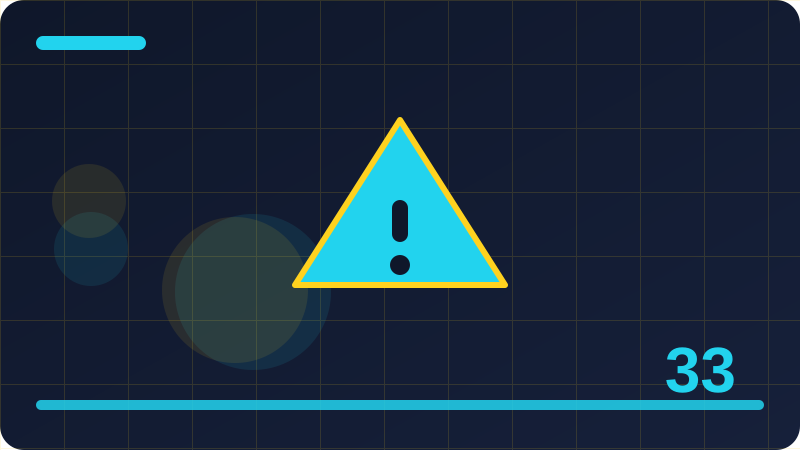

Chapter 33: Debugging, Logging and Diagnostics

Section 1: What Debugging Really Is
Debugging is the process of finding out why a program does something different from what you expected, and then fixing the cause, not just the symptom. It begins with a surprise: a wrong number, a missing item, a crash, or a program that quietly does nothing when it should do something. The beginner's instinct is to change code at random until the surprise goes away, but that approach often hides the bug rather than fixing it, and the bug returns later in a different form. Good debugging is slower and more methodical. It starts by describing the problem precisely: what did you expect, what actually happened, and under what conditions? Then it forms a theory about the cause, tests that theory with evidence, and only then changes the code. That cycle, observe, theorise, test, fix, is the heart of debugging, and it applies whether the bug is a typo or a deep logic error. Debugging also requires humility, because the bug is almost always in your own understanding, not in the computer. The computer does exactly what the code says, and when the result surprises you, it means your mental picture of the code was wrong somewhere. Finding where your picture diverges from reality is the real work of debugging. The tools in this chapter, print statements, logging, breakpoints, and diagnostics, are all ways of gathering evidence about what the program actually does, so that you can compare it with what you thought it would do and find the divergence.
func add(_ a: Int, _ b: Int) -> Int {
return a + b
}
let total = add(2, 3)
print("Total is \(total)")The tiny example shows the simplest debugging tool: a print statement that reveals a value. If the total were wrong, the print would show the wrong value, and you would know the problem is in the addition or in the inputs, rather than in some later code that uses the total. That narrowing, from a whole program to a specific value, is what debugging tools do. Print statements are often dismissed as crude, but they are honest and immediate, and they remain useful even for experienced programmers. The key is to use them deliberately: print the values that distinguish between your theories, not every value in the program. A few well-chosen prints, placed where theories diverge, will find a bug faster than a hundred prints scattered everywhere. As you learn more sophisticated tools in this chapter, keep that principle in mind: debugging is about evidence, and the best evidence is the value that separates one theory from another.
A debugging journal is also worth keeping for tricky bugs. Write down each theory you tested, what evidence you gathered, and what you concluded. The journal prevents you from retesting the same theory twice, and it often reveals a pattern across theories that points at the real cause.
Check: Why is randomly changing code until a bug disappears a poor debugging strategy?
Section 2: Reproducing a Bug Reliably
Before you can fix a bug, you must be able to make it happen reliably, because a bug you cannot reproduce is a bug you cannot test a fix against. Reproducing means finding a set of steps, inputs, or conditions that cause the bug every time, or at least often enough to study it. Start by writing down exactly what you did when the bug appeared: the inputs, the commands, the order of actions, and anything unusual about the situation. Then try those steps again, and see whether the bug repeats. If it does, you have a reproduction, and you can start shrinking it, removing steps and inputs that are not needed, until you have the smallest case that still fails. That minimal case is gold, because it isolates the bug from irrelevant complexity and often reveals its cause directly. If the bug does not repeat, it may depend on timing, on leftover state from an earlier run, or on data you have not noticed. In that case, look for what was different about the first occurrence: was it the first run after a change, was the data larger than usual, was another program running? Those differences are clues. A bug that only appears sometimes is still a bug, and it deserves the same investigation, but it requires patience and careful note-taking. Keep a record of each attempt, what you tried, and whether the bug appeared, because patterns emerge from records that memory misses. A reliable reproduction is the foundation of all debugging that follows, and it is worth spending time to obtain one before changing any code.
func firstItem(of items: [String]) -> String {
return items[0]
}
let items = ["Apples", "Bread"]
print(firstItem(of: items))The first-item function works for a non-empty list, but it crashes for an empty list, because index zero does not exist. If a user reported a crash, and you could not reproduce it with a normal list, you might conclude the report was mistaken. But if you tried an empty list, the crash would reproduce immediately, and the cause would be obvious. That is why reproduction matters: the bug depends on a specific input, and only that input reveals it. When you receive a bug report, your first job is to find the input or condition that triggers it, even if that input seems unlikely. Users encounter unlikely inputs all the time, because real data is messier than test data. A reproduction that uses the exact failing input turns a mysterious crash into a clear, fixable problem, and it gives you a test case to verify the fix afterwards. Never skip the reproduction step, even when you think you know the cause, because the reproduction is what proves your theory.
When a bug depends on data, try to obtain the exact data that triggered it, with sensitive details removed if needed. A bug report that includes the failing input is far more useful than one that merely describes the failure, because the input is what lets you reproduce it.
Check: Why should you find a reliable reproduction before changing code to fix a bug?
Section 3: Print Debugging Done Well
Print debugging, meaning adding temporary print statements to reveal what a program is doing, is the oldest debugging technique, and it remains effective when done well. The key to doing it well is to print the right things, in the right places, with enough context to interpret them. Print values at the boundaries of your theories: before and after a suspicious calculation, at the entry and exit of a function, or when a branch is taken. Label each print with what it is showing, such as printing "Count before adding: 3" rather than just "3", because an unlabelled number is useless when several prints produce numbers. Print the inputs to a function as well as its output, because a function can be correct for the inputs it received and still produce a surprising result if the inputs themselves were wrong. That distinction, wrong inputs versus wrong logic, is one of the most common debugging forks, and prints at function boundaries resolve it immediately. Another good habit is to remove print statements once the bug is fixed, or to convert the useful ones into proper logging, which is covered later in this chapter. Leftover prints clutter output and can confuse users, and they can also leak information that should not be shown. Print debugging is not a sign of inexperience; it is a tool that every programmer uses, and using it deliberately, with labels and at theory boundaries, makes it far more effective than scattering prints randomly and hoping one of them reveals the bug.
func totalPrice(unitPrice: Int, quantity: Int) -> Int {
print("totalPrice called with unitPrice=\(unitPrice), quantity=\(quantity)")
let total = unitPrice * quantity
print("totalPrice returning \(total)")
return total
}
let price = totalPrice(unitPrice: 4, quantity: 3)
print("Final price: \(price)")The total-price function prints its inputs on entry and its result on exit, with labels that make each print self-explanatory. If the final price were wrong, these prints would immediately show whether the inputs were wrong or the calculation was wrong, which are the two main suspects. If the inputs were correct but the result was wrong, the calculation is at fault. If the inputs were wrong, the caller is at fault, and the investigation moves upstream. That narrowing is the value of boundary prints. You can extend this habit by printing the branch taken in a conditional, or the size of a collection before and after a transformation, whenever those are the points where theories diverge. Print debugging done well is not about printing everything; it is about printing the few values that decide between competing explanations, and labelling them so clearly that the answer jumps out when you read the output.
Print debugging can also be combined with a simple flag that turns prints on or off, so that you can leave useful prints in place during development and silence them for normal use. A flag is better than deleting and re-adding prints, because the prints remain available when the bug returns.
Check: Why should print statements be labelled, and printed at function boundaries?
Section 4: Reading Error Messages Carefully
Error messages are the program's way of telling you what went wrong, and reading them carefully is a debugging skill that pays off constantly. A Swift error message usually contains several pieces of information: what kind of error occurred, where it occurred, and often what value or type was involved. Beginners often skim error messages, catching only that something failed, and then guess at the fix. Experienced debuggers read the whole message slowly, because the details usually point at the cause. For example, a message about an index out of range tells you that a collection was accessed beyond its size, which suggests either an empty collection or a loop that runs too far. A message about an unexpectedly found nil tells you that an optional was force-unwrapped when it had no value, which suggests either a missing value or a wrong assumption about when the value is set. A type mismatch message tells you that a value of one type was used where another was expected, which suggests a wrong variable or a misunderstood function. The file and line number in the message tell you where to look, but be careful: the line where an error is reported is not always the line where the bug lives. A wrong value can travel through several functions before it causes an error, so the reported line is the place where the problem surfaced, and the bug may be upstream. Read the message, go to the reported location, and then trace the faulty value backwards to its origin. That backward tracing, guided by the message, is a reliable debugging path.
let numbers = [10, 20, 30]
let index = 5
if numbers.indices.contains(index) {
print(numbers[index])
} else {
print("Index \(index) is out of range for \(numbers.count) items")
}The example shows defensive code that checks an index before using it, and prints a clear message when the index is out of range. That message contains the index and the count, which are exactly the details needed to understand the problem. If this were a real bug, the message would tell you that index five was requested from a three-item list, and you would then ask where index five came from, tracing it back to its source. That tracing is the work of debugging, and a good error message makes it possible by preserving the relevant values. When you write your own error handling, include the relevant values in your messages, just as this example does, because future debuggers, including yourself, will need them. A message that merely says out of range, without saying which index or how many items, forces the debugger to add prints to recover information that could have been included from the start. Detailed messages are a kindness to everyone who will ever debug the code.
Error messages from libraries and frameworks deserve the same careful reading as messages from your own code. A framework message may mention a requirement you missed, such as calling a function on a particular thread, or passing a value in a particular format, and that detail is often the fix.
Check: Why might the line where an error is reported not be the line where the bug lives?
Section 5: Breakpoints and Stepping Through Code
A breakpoint is a marker you place on a line of code that tells the debugger to pause the program when it reaches that line, so that you can inspect the program's state at that moment. Breakpoints are more powerful than print statements for complex bugs, because they let you examine any variable, not just the ones you thought to print, and they let you step through code line by line, watching how values change. Stepping has three main forms: stepping over a line, which runs it and moves to the next line; stepping into a function call, which enters the function so you can watch its internals; and stepping out of a function, which runs the rest of the function and returns to the caller. Learning when to use each form is part of learning to debug: step over code you trust, step into code you suspect, and step out when you have seen enough. Conditional breakpoints, which pause only when a condition is true, are invaluable for bugs that occur only on a specific iteration, such as the hundredth item in a loop. Without a condition, you would have to step through ninety-nine correct iterations to reach the failing one. With a condition, the debugger pauses exactly when the interesting case occurs. Breakpoints require a debugger, which is provided by your development environment, and the details of setting them vary, but the concepts are universal. The habit to build is to pause at the point where theories diverge, inspect the actual values, and compare them with your expectations. That comparison, made at a paused moment, is often where the bug reveals itself.
func sum(_ numbers: [Int]) -> Int {
var total = 0
for number in numbers {
total += number
}
return total
}
let result = sum([1, 2, 3, 4])
print(result)Imagine placing a breakpoint on the line inside the loop, where total is updated, and stepping through the loop for the input one, two, three, four. On each iteration, you would see total grow: zero, one, three, six, ten. If the final result were wrong, watching total grow would show exactly when it diverged from your expectation, and which iteration caused the divergence. That is the power of stepping: it turns a wrong final result into a visible moment where the program departs from your mental picture. Print statements can show the same growth if you print total each time, but a breakpoint lets you inspect every variable, not just the ones you printed, and it lets you change direction, stepping into a suspicious call or skipping over trusted code. For simple bugs, prints are faster. For complex bugs, breakpoints are worth the setup, because they give you a complete view of the program's state at the critical moment.
Breakpoints can also be set on a line that is executed many times, with a hit count that pauses only after a certain number of hits. Hit-count breakpoints are another way to reach a failing iteration without stepping through all the successful ones that precede it.
Check: What is a conditional breakpoint, and when is it especially useful?
Section 6: Inspecting Variables While Paused
When a program is paused at a breakpoint, you can inspect its variables, which means looking at their current values, and that inspection is where many bugs become obvious. The debugger shows local variables, parameters, and often the properties of objects in scope, with their current values displayed. The skill is knowing what to look for: compare each value with what you expected at that point in the program. If a variable holds a surprising value, ask where it came from. Was it set incorrectly, was it never set, or was it changed by code you did not expect? A variable that is nil when it should hold a value suggests a missing assignment or a failed lookup. A count that is one too high or one too low suggests an off-by-one error in a loop or a boundary. A string that is empty when it should contain text suggests a failed read or a wrong key. Each surprising value is a clue, and following clues backwards, from the surprising value to the code that produced it, is the core debugging loop. It also helps to inspect variables at several pauses, not just one, to see how a value evolves. A value that starts correct and becomes wrong tells you that the code between the two pauses is at fault, which narrows the search dramatically. Some debuggers also let you change a variable's value while paused, and then continue, to test a theory: if changing the value fixes the behaviour, your theory about the cause is supported. That experimental use of the debugger is powerful, but it should be used to test theories, not to patch over bugs permanently, because a changed value in a debugging session does not change the code. The fix must still be made in the code itself.
struct Basket {
var items: [String] = []
mutating func add(_ item: String) {
items.append(item)
}
}
var basket = Basket()
basket.add("Apples")
basket.add("Bread")
print(basket.items.count)If you paused after the two adds and inspected basket, you would expect items to contain Apples and Bread, and the count to be two. If inspection showed only one item, you would know that one add did not happen, or that the basket was reset between adds, and you would look for the code responsible. If inspection showed the right items but the printed count were wrong, you would know the problem is in the counting or printing, not in the adds. That separation, achieved by inspecting the actual state, is what makes pausing so effective. Without inspection, you might guess at the cause and change the wrong code. With inspection, you see the truth of the program's state at that moment, and your next step is guided by evidence rather than guesswork. Practise inspecting variables deliberately, comparing each one with your expectation, and you will find that many bugs announce themselves as soon as you look at the right variable at the right moment.
Check: When you inspect a variable and find a surprising value, what should you ask next?
Section 7: The Debugger Console and Expressions
Most debuggers include a console where you can type expressions to evaluate while the program is paused, and that console is a flexible tool for testing theories on the spot. You can ask for the value of a variable, compute a new value from existing ones, call a function with current values, or check a condition, all without changing the code or restarting the program. For example, if you suspect a calculation is wrong, you can evaluate the calculation in the console with the current variables and see whether it matches the program's result. If it matches, the calculation is not the problem, and your theory is wrong. If it differs, you have found a discrepancy to investigate. The console is also useful for exploring: you can ask for the count of a collection, the first element of a list, or the result of a helper function, to build a picture of the program's state that goes beyond the variables the debugger displays by default. A caution: evaluating expressions in the console can have side effects if the expression calls a function that changes state, so prefer pure expressions, ones that only read values, when exploring. Side-effecting evaluations can change the program's state and confuse the debugging session, making it hard to tell what the program did on its own and what you did through the console. Used carefully, the console turns a paused program into an interactive laboratory, where you can test theories quickly, without the slow cycle of editing code, rebuilding, and rerunning. That speed matters, because debugging is often a process of testing many small theories, and a fast way to test each one keeps the process moving.
func average(of numbers: [Int]) -> Double {
if numbers.isEmpty {
return 0
}
let total = numbers.reduce(0, +)
return Double(total) / Double(numbers.count)
}
let numbers = [10, 20, 30]
let result = average(of: numbers)
print(result)If you paused inside the average function, the console could tell you the value of total, the count, and the division result, each on demand. If the result were wrong, you could evaluate Double(total) / Double(numbers.count) yourself and compare it with the program's result, which would tell you whether the division or the inputs were at fault. You could also evaluate numbers.reduce(0, +) to check the sum independently. Each console check is a small experiment, and a series of such experiments narrows the fault quickly. The console is not a replacement for thinking; it is a tool for testing thoughts against reality, quickly and interactively. Learn the console commands of your debugger, even just the basic expression evaluation, and you will have a powerful aid for the trickiest bugs, where prints and stepping alone are not quite enough.
The console can also be used to check the type of a value, or to test whether an optional contains a value, which are quick checks that often resolve confusion about what a variable actually holds versus what you assumed it held.
Check: Why should you prefer pure, read-only expressions when evaluating in the debugger console?
Section 8: Common Bug Patterns to Recognise
Experienced debuggers recognise common bug patterns quickly, because the same mistakes recur in many programs, and learning to spot them will speed up your debugging considerably. Off-by-one errors, where a loop runs one time too many or too few, or an index is one past the end, are among the most common, and they often show up as a missing first or last item, or a crash on an empty collection. Nil errors, where an optional is used without checking, show up as crashes on force unwraps or as missing values. Wrong-variable errors, where a similar name is used by mistake, such as using a total where a count was intended, produce results that are plausible but wrong, which makes them hard to spot without careful inspection. State errors, where a variable is not reset between uses, or is changed by one part of a program and read by another that expected the old value, produce bugs that depend on order or history, and they often appear only after several operations. Logic errors, where a condition is inverted or a boolean is combined wrongly, produce behaviour that is the opposite of intended, such as allowing what should be denied. Concurrency errors, where shared state is changed by two tasks at once, produce intermittent failures that are hard to reproduce, which is why actors, covered in an earlier chapter, matter so much. When you meet a bug, run through this list of patterns and ask which one fits the symptoms. That checklist often suggests the cause faster than open-ended investigation, because most bugs are instances of a familiar pattern, not entirely new inventions. Recognising patterns is a skill that grows with experience, and each bug you solve adds to your mental catalogue.
func sumFirstThree(_ numbers: [Int]) -> Int {
var total = 0
for index in 0..<3 {
if numbers.indices.contains(index) {
total += numbers[index]
}
}
return total
}
print(sumFirstThree([5, 10, 15, 20]))The sum-first-three function shows defensive code against an off-by-one style crash: it checks that each index exists before using it, so a short list does not crash. If the function had used numbers[index] without the check, a list with fewer than three items would crash, which is a classic off-by-one symptom. The check is a good habit for any code that accesses a collection by index, especially when the collection's size is not guaranteed. When you debug a crash, check first whether it is an index error, a nil error, or a wrong-variable error, because those three cover a large fraction of crashes. When you debug a wrong result, check for off-by-one, inverted logic, and stale state, because those cover a large fraction of wrong results. Pattern recognition does not replace investigation, but it gives investigation a head start, by suggesting the most likely causes first. Keep a mental list of patterns, add to it as you learn, and consult it whenever a bug appears.
Check: Name four common bug patterns, and give a symptom of each.
Section 9: Binary Search Debugging
When a bug's location is unknown and the program is large, a systematic technique called binary search debugging, or bisection, can find it efficiently. The idea is to divide the program's execution into halves and test which half contains the bug, then divide that half again, repeating until the faulty section is small. In practice, this often means placing a check, such as a print or an assertion, halfway through the suspected code, and seeing whether the state is already wrong at that point. If it is wrong, the bug is in the first half. If it is correct, the bug is in the second half. That single check halves the search space, and repeating it narrows the fault quickly, even in a large program. The same idea applies to changes: if a program worked yesterday and fails today, and many changes were made in between, test a version from halfway through the changes to see whether it works. If it works, the bug is in the later changes. If it fails, the bug is in the earlier ones. Repeating that narrows the faulty change to one, without needing to understand every change. Binary search debugging is powerful because it is logarithmic: each check halves the possibilities, so even a thousand-line program can be narrowed to a few lines in about ten checks. The technique requires that you can test whether the state is correct at a given point, which is why assertions and clear expectations matter. It also requires discipline: resist the urge to guess, and instead place the check, read the result, and follow the half it points to. That discipline turns a daunting search into a short, systematic process.
func process(_ values: [Int]) -> [Int] {
var step1 = values.map { $0 * 2 }
var step2 = step1.filter { $0 > 5 }
var step3 = step2.map { $0 + 1 }
return step3
}
let output = process([1, 2, 3, 4])
print(output)The process function has three steps, and if its output were wrong, binary search debugging would check the intermediate result after step two, or after step one, to see which step introduced the error. If step one's output were correct but step two's were wrong, the bug is in step two. If step one's output were already wrong, the bug is in step one. That intermediate check is the key: without it, you would have to examine all three steps in detail. With it, you examine only the faulty one. In a longer chain, the same principle applies, with checks placed at the midpoint of the chain. Practise this technique on multi-step functions, by printing intermediate results and comparing them with hand-computed expectations. It will feel slow at first, because each check requires thought, but it is far faster than reading every line in detail, and it scales to programs of any size. Systematic narrowing beats exhaustive reading, every time.
Binary search also works on data: if a bug appears with a large input but not with a small one, try an input halfway in size, and keep halving until you find the smallest input that triggers the bug. The smallest triggering input is usually the clearest illustration of the cause.
Check: How does checking a midpoint halve the search for a bug in a multi-step function?
Section 10: Rubber Duck Debugging
Rubber duck debugging is a technique with a silly name and a serious benefit: explain your code, out loud, line by line, to an inanimate object, such as a rubber duck, or to a patient colleague, or even to an empty chair. The act of explaining forces you to articulate assumptions you had not examined, and the bug often reveals itself mid-sentence, when you say something that you suddenly realise is false. For example, you might explain that a loop runs for every item, and then notice that it actually stops one item early. Or you might explain that a variable holds a user's name, and then realise it actually holds the previous user's name, because it was never reset. The duck does not answer; the explanation itself does the work, by slowing you down and making your mental picture explicit. That explicitness is the point: bugs live in the gap between what you think the code does and what it actually does, and explaining the code forces you to state what you think, which makes the gap visible. Rubber duck debugging is particularly effective when you have been staring at code for a long time, because staring tends to reinforce your existing picture, while explaining forces you to rebuild it from scratch. It also helps when you are stuck on a bug that feels mysterious, because the mystery often dissolves once the code is described plainly. You do not need a real duck; any listener, real or imagined, will do, as long as you explain genuinely, line by line, rather than summarising. The technique is a reminder that debugging is fundamentally about understanding, and understanding often comes from articulation, not just from tools.
func greetUser(name: String, isNew: Bool) -> String {
if isNew {
return "Welcome, \(name)!"
}
return "Welcome back, \(name)!"
}
print(greetUser(name: "Ada", isNew: true))If you explained this greeting function to a duck, you would say that it returns a welcome message for new users and a welcome-back message for returning users, based on the isNew flag. That explanation is correct, and the function matches it. But imagine the function had the two messages swapped. Explaining it would force you to say that new users get the welcome-back message, which sounds wrong as soon as you hear yourself say it, and the bug would be obvious. That is the duck's magic: it makes wrongness audible. The technique works best when you explain slowly, covering every branch and every variable, rather than rushing through the parts you think are fine. The bug is usually in a part you thought was fine, which is why you skipped it. Slow, complete explanation is the discipline, and the duck is just an excuse to practise it. Try it the next time you are stuck, and notice how often the answer appears before you finish the explanation.
Check: Why does explaining code out loud often reveal a bug that staring at it did not?
Section 11: Logging Versus Printing
Logging and printing look similar, because both produce text output, but they serve different purposes, and understanding the difference will improve your programs. Printing is a temporary debugging aid: it shows values while you are developing, and it is usually removed before a program is finished. Logging is a permanent record: it writes messages about what a program did, at what time, and with what result, so that later, when something goes wrong in real use, there is a record to investigate. A log message is typically more structured than a print: it includes a timestamp, a severity level, such as info, warning, or error, and a message describing the event. Severity levels let readers filter the log, showing only errors when they are hunting a failure, or showing everything when they need full detail. Logs are written to a file or to a system log, rather than to the screen, so that they persist after the program ends and do not clutter the user's view. That persistence is their main value: a print disappears when the program closes, but a log remains, and it can be the only evidence of what happened during a failure that cannot be reproduced. Good logging is selective: it records important events, such as starting, finishing, errors, and unusual situations, without recording so much that the important entries are buried. Learning to log well is a professional skill, because it turns a program from a black box into a program whose behaviour can be reconstructed after the fact, which is essential for diagnosing real-world problems.
import Foundation
enum LogLevel: String {
case info = "INFO"
case warning = "WARNING"
case error = "ERROR"
}
func log(_ level: LogLevel, _ message: String) {
let timestamp = Date()
print("[\(timestamp)] [\(level.rawValue)] \(message)")
}
log(.info, "Program started")
log(.warning, "Cache is empty, using defaults")
log(.error, "Failed to load settings file")The simple logger above shows the essential structure of a log entry: a timestamp, a level, and a message. The three example messages illustrate the three levels: an informational note that the program started, a warning about an unusual but survivable situation, and an error about a failure. In a real program, the logger would write to a file rather than printing, and it might include more context, such as the name of the component that logged the message. But the shape is the same, and the habit is the same: record important events with enough context to understand them later. When you add logging to a program, ask yourself what a future debugger would need to know about this moment. If the answer is nothing, do not log it. If the answer is something, log it with a clear message and an appropriate level. That selectivity keeps logs useful, because a log full of trivia is almost as useless as no log at all.
A practical way to decide between printing and logging is to ask whether the message will still be useful after the program has finished and you are no longer watching it. If the answer is yes, it belongs in a log. If the answer is no, a temporary print is enough.
Check: What is the main difference between a print statement and a log message?
Section 12: Log Levels in Plain Words
Log levels are categories that describe how important a log message is, and they exist so that readers can filter a log to the level of detail they need. The most common levels, from least to most severe, are debug, info, warning, and error, with some systems adding trace below debug and fatal above error. Debug messages are detailed notes for developers, such as the value of a variable at a particular point, and they are usually only enabled during development, because they are too verbose for normal use. Info messages record normal, expected events, such as a program starting, a task completing, or a user signing in, and they form the basic narrative of what a program did. Warning messages record unusual situations that are not errors, but that might indicate a problem, such as using a default value because a setting was missing, or retrying an operation that failed once. Error messages record failures, such as a file that could not be loaded, or an operation that could not be completed, and they are the messages a debugger looks for first when investigating a failure. Fatal messages, where they exist, record errors so severe that the program cannot continue. Choosing the right level matters, because a log where everything is an error is useless for finding real errors, and a log where real errors are recorded as info will be missed. A good rule is to ask how a reader should react: if the message requires action, it is an error. If it deserves attention but not action, it is a warning. If it merely records what happened, it is info. If it is only useful while debugging, it is debug. That reaction-based rule keeps levels meaningful and logs readable.
import Foundation
enum Level: String {
case debug = "DEBUG"
case info = "INFO"
case warning = "WARNING"
case error = "ERROR"
}
func writeLog(_ level: Level, _ message: String) {
print("[\(level.rawValue)] \(message)")
}
writeLog(.debug, "Checking cache for key 'news'")
writeLog(.info, "Download completed for 'news'")
writeLog(.warning, "Download took longer than expected")
writeLog(.error, "Download failed for 'news'")The four log lines above show each level used appropriately: a debug note about a cache check, an info note about a completed download, a warning about slowness, and an error about a failure. A reader filtering for errors would see only the failure, which is what they need when investigating a problem. A reader wanting the full story would see all four, in order, which tells the narrative of the download. That filterability is the purpose of levels. When you write log messages, choose the level by the reaction rule, not by how dramatic the message feels. A slow download is a warning, not an error, because the download still succeeded. A failed download is an error, because it requires attention. Consistent level choices, applied across a program, make logs a reliable diagnostic tool rather than a jumble of equally loud messages. Practise choosing levels deliberately, and your logs will repay you when you need them most.
Check: How should you decide whether a message is info, warning, or error?
Section 13: What to Log and What Not to Log
Deciding what to log is a balance between too little, which leaves a debugger blind, and too much, which buries important messages in noise. Log the events that a future debugger would need to reconstruct what happened: program starts and stops, important operations completing, errors with their details, unusual situations such as fallbacks or retries, and changes to important state, such as a user signing in or a setting changing. Do not log every step of a loop, every value of a variable, or every routine operation in fine detail, because that volume makes the log unreadable and slows the program. A useful test is to imagine reading the log after a failure: would this entry help you understand what happened, or would it merely add lines to scroll past? If it would help, log it. If it would not, leave it out. There is one category that must never be logged, regardless of its diagnostic value: sensitive information, such as passwords, tokens, private keys, personal data, or full file contents that might contain such data. Logging sensitive data creates a security risk, because logs are often stored, shared, or kept for a long time, and anyone who can read the log can then read the secret. If you need to log an event involving sensitive data, log that the event happened, without the sensitive value itself, such as logging that a login failed for a user, without logging the password that was tried. That rule is absolute: no diagnostic value justifies leaking a secret into a log. Good logging is therefore both selective and safe: it records what matters, omits what does not, and never records secrets.
import Foundation
func logInfo(_ message: String) {
print("[INFO] \(message)")
}
func logError(_ message: String) {
print("[ERROR] \(message)")
}
func loadSettings(from path: String) {
logInfo("Loading settings from \(path)")
if path.isEmpty {
logError("Settings path is empty, using defaults")
} else {
logInfo("Settings loaded successfully")
}
}The settings loader logs its start, its success, and its fallback to defaults, which are exactly the events a debugger would need to understand a settings problem. It does not log the contents of the settings, which might contain sensitive values, and it does not log every step of the loading process. That selectivity is the point. If settings failed to load in real use, the log would show the attempt, the fallback, and the path involved, which is enough to diagnose the problem without exposing the settings themselves. When you add logging to your own programs, write the log entries you would want to read after a failure, and check each one for sensitive values before keeping it. That two-step review, usefulness and safety, will produce logs that are both helpful and responsible, which is the standard a professional program should meet.
Another useful logging habit is to include an identifier for the operation being logged, such as a task name or a request number, so that entries about the same operation can be grouped together when reading a long log. Identifiers turn a flat list of entries into a set of traceable stories.
Check: What category of information must never appear in a log, and why?
Section 14: Structured Logging Concepts
Structured logging means writing log entries in a consistent, machine-readable format, rather than as free-form sentences, so that logs can be searched, filtered, and analysed by tools as well as by humans. A structured entry typically contains fields such as a timestamp, a level, a component name, a message, and additional key-value pairs that describe the event, such as a user name, a file name, or an operation count. Those fields allow a tool to answer questions such as how many errors occurred for a particular component, or which users were affected by a failure, without parsing sentences. The most common structured format is JSON, where each log entry is a JSON object with named fields, because JSON is widely supported and easy to parse. Structured logging does not mean abandoning readable messages; a good structured entry still has a clear human-readable message field, alongside the machine-readable fields. The benefit is that the same log serves two audiences: humans reading a single entry, and tools analysing thousands of entries. For small programs, structured logging may be overkill, and simple text logs are fine. For larger programs, or programs whose logs will be collected and analysed centrally, structured logging is a significant improvement, because it turns log analysis from a manual chore into a query. The key habit is consistency: whatever format you choose, use it for every entry, with the same field names and the same conventions, so that tools and readers can rely on the structure. Inconsistent logs, where some entries have a field and others do not, or where the same concept is named differently in different entries, are almost as hard to analyse as unstructured ones.
import Foundation
struct LogEntry: Codable {
let timestamp: String
let level: String
let component: String
let message: String
}
func structuredLog(level: String, component: String, message: String) {
let entry = LogEntry(timestamp: "2026-10-30", level: level, component: component, message: message)
if let data = try? JSONEncoder().encode(entry),
let text = String(data: data, encoding: .utf8) {
print(text)
}
}
structuredLog(level: "INFO", component: "Downloader", message: "Download completed")The structured log example encodes an entry as JSON, with fields for timestamp, level, component, and message. A tool could filter these entries by component, count them by level, or search them by message, all without parsing sentences. A human reading one entry can still understand it, because the message field is plain language. That dual readability is the goal of structured logging. For the small programs in this book, you do not need to adopt full structured logging, but you should understand the concept, because you will meet it in larger systems, where logs are collected from many programs and analysed together. When you do adopt it, keep the field names consistent, include the fields that future analysis will need, and do not forget the human-readable message. A log that only machines can read is a log that humans will avoid, and humans are the ones who ultimately diagnose problems.
Structured logs also make it easier to spot patterns, such as a particular component producing many warnings before an error, which might indicate a warning that should have been treated as an error. Patterns across many entries are invisible in free-form text but obvious in structured fields.
Check: What makes a log entry structured, and why is that useful for analysing many entries?
Section 15: Diagnostics: Gathering Clues Systematically
Diagnostics is the broader practice of gathering clues about a program's behaviour, beyond just logs and prints, and doing so systematically rather than haphazardly. A diagnostic approach starts by listing what you know, what you do not know, and what evidence would answer each unknown. Then it gathers that evidence in order, checking each piece before moving on, rather than jumping to conclusions. Diagnostic evidence can come from many sources: log files, error messages, test results, the program's current state, its configuration, its inputs, and its environment, such as available disk space or network connectivity. A systematic diagnostician checks the easy things first, such as whether the program is running the version you think it is, whether its inputs are what you expect, and whether its configuration is correct, because those simple checks resolve a surprising number of problems. Then they move to harder checks, such as inspecting state, tracing execution, or reproducing with minimal input. Keeping notes during diagnosis is part of the system: writing down each check and its result prevents repeating checks and reveals patterns. Diagnostics is also about knowing when to stop gathering and start fixing: once the evidence points clearly at a cause, further evidence gathering wastes time. The skill is to gather enough evidence to be confident, but not so much that diagnosis becomes its own delay. That balance comes with practice, and it is helped by a simple habit: before investigating, write down the question you are trying to answer, and after each check, write down whether it answered the question. That habit keeps diagnosis focused and prevents it from wandering into irrelevant areas.
func diagnose(values: [Int]) -> String {
if values.isEmpty {
return "No values provided"
}
let total = values.reduce(0, +)
let average = Double(total) / Double(values.count)
if average < 0 {
return "Average is negative: \(average)"
}
return "Average is \(average)"
}
print(diagnose(values: [10, 20, 30]))
print(diagnose(values: []))The diagnose function illustrates systematic checking in miniature: it first checks for the empty case, then computes, then checks for a negative average, returning a clear message for each situation. That order, easy checks first, then computation, then interpretation, mirrors good diagnostic practice. A program that jumps straight to computation without checking for empty input would crash or produce a misleading result, just as a diagnostician who jumps to complex theories without checking simple ones wastes time. When you diagnose a real problem, start with the simple checks, record their results, and let the evidence guide you to the next check. That methodical approach feels slower than guessing, but it reaches the correct cause faster, because it eliminates possibilities systematically instead of chasing hunches. Diagnostics is debugging with a plan, and a plan is what separates a professional investigation from a frantic one.
Diagnostics also benefits from comparing a failing case with a working case that is as similar as possible. The differences between the two cases often point directly at the cause, because everything they share can be ruled out, leaving only the differing factors as suspects.
Check: Why should diagnostics start with simple checks before moving to complex theories?
Section 16: Assertions as Diagnostics
An assertion is a statement in code that something must be true at a particular point, and if it is not true, the program stops with a clear message. Assertions are diagnostic tools because they turn silent wrongness into loud failure: instead of a program continuing with a bad value and producing a confusing result later, it stops immediately at the point where the bad value is detected, with a message stating what was expected. That immediacy makes the fault easy to locate, because the failure is reported at the point of detection, not far downstream where the bad value finally causes a visible problem. Assertions are typically used for conditions that should never be false if the program is correct, such as an index being in range, a value being non-negative, or a state being one of the expected cases. They are not a replacement for error handling: errors that can legitimately occur, such as a missing file or invalid user input, should be handled gracefully, not asserted. Assertions are for programmer errors, meaning situations that indicate a bug in the code itself, not a problem in the outside world. In Swift, the assert function checks a condition in debug builds and does nothing in release builds, which means assertions are development aids, not production safety nets. That distinction matters: do not rely on an assertion to protect users in a released program, because it will not be there. Use assertions during development to catch your own mistakes early, with clear messages, and use proper error handling for situations that can occur in real use. That division keeps both tools in their proper roles.
func divide(total: Int, count: Int) -> Int {
assert(count != 0, "Count must not be zero when dividing")
return total / count
}
print(divide(total: 100, count: 4))The divide function asserts that the count is not zero before dividing, which is a programmer-error check: a caller that passes zero has made a mistake, and the assertion catches it immediately with a clear message. Without the assertion, the program would crash on division by zero anyway, but with a less clear message, and the crash might occur in a different place if the division were part of a larger calculation. The assertion's message states the expectation plainly, which helps the debugger understand what went wrong. Assertions are most valuable at the boundaries of functions, where they check that inputs meet the function's requirements, and at points where an invariant, meaning a condition that should always hold, can be stated. Writing an assertion forces you to state the invariant explicitly, which is itself a useful discipline, because it makes your assumptions visible and checkable. Use assertions liberally during development, for conditions that must hold, and you will catch many bugs at the moment they occur, rather than downstream where they are harder to trace.
Check: What is the difference between an assertion and error handling, and when should each be used?
Section 17: Crash Reports and What They Tell You
A crash report is a record produced when a program stops unexpectedly, and learning to read one is an essential debugging skill, because crashes are often reported by users who cannot explain what happened. A typical crash report contains the type of crash, such as an out-of-range access or a force unwrap of nil, the location where it occurred, in terms of function names and line numbers, and a stack trace, which is a list of the function calls that were active when the crash happened, from the crashing function back to the program's start. The stack trace is the most valuable part, because it shows the path the program took to reach the crash, which often reveals the sequence of calls that led to the faulty state. Reading a stack trace from top to bottom, you see the crashing function first, then its caller, then its caller's caller, and so on. The bug may be in the crashing function, or it may be in a caller that passed a bad value, so you should examine the trace for the first frame that contains your own code, rather than framework code, because that frame is usually where your investigation should start. Crash reports also often include the program's version, the device or system it ran on, and sometimes the values of key variables, all of which help reproduce the crash. When you receive a crash report, your first steps are to identify the crash type, find the relevant frame in the stack trace, and try to reproduce the crash with the information given. A crash report is not a solution, but it is a detailed clue, and a debugger who can read it will solve crashes far faster than one who treats it as incomprehensible noise.
func greet(name: String?) -> String {
guard let name = name else {
return "Hello, guest!"
}
return "Hello, \(name)!"
}
print(greet(name: "Ada"))
print(greet(name: nil))The greet function uses a guard to handle nil safely, returning a guest greeting instead of crashing. If it had force-unwrapped the optional instead, a nil name would produce a crash report mentioning an unexpectedly found nil, with a stack trace pointing at the unwrap. Reading that report, you would see the crash type, nil unwrap, and the location, and you would know to look for where nil came from. The guard version avoids the crash entirely, which is better, but the lesson about reading reports remains: a crash report's type and location are the starting points for investigation. When you write code, prefer safe handling, such as guard, over force unwrapping, so that crashes are rarer. When a crash does occur, read its report carefully, starting with the type and the first frame of your own code, and let it guide your reproduction and fix. Crash reports are messages from the program about its own failure, and they deserve the same careful reading as error messages.
Check: What are the three most useful parts of a crash report, and how do you use the stack trace?
Section 18: Reproducing Crashes from Reports
Reproducing a crash from a report means recreating the conditions that caused it, using the clues in the report, so that you can study and fix it. The report gives you the crash type, the location, and the call path, which together suggest what the program was doing when it crashed. Your job is to construct a minimal case that follows that path and triggers the same crash. Start by identifying the function where the crash occurred and the inputs it would need to crash in that way. For an index crash, that means a collection smaller than the index used. For a nil crash, that means a nil value reaching a force unwrap. For a type crash, that means a value of an unexpected type. Then write a small program or test that supplies those inputs and calls the function, and run it to see whether it crashes the same way. If it does, you have a reproduction, and you can investigate the fix with confidence. If it does not, the report's other clues, such as the version, the system, or the call path, may point at additional conditions, such as a particular order of operations or a particular state that must be set up first. Reproducing from a report is often harder than reproducing a bug you saw yourself, because you were not present when it happened, but the report's details are usually enough if read carefully. Keep the reproduction minimal, as with any bug, and once it reproduces, turn it into a test that fails before the fix and passes after, so that the crash cannot return silently. That test is the lasting value of the reproduction effort.
func item(at index: Int, from items: [String]) -> String {
if items.indices.contains(index) {
return items[index]
}
return "No such item"
}
print(item(at: 2, from: ["A", "B"]))
print(item(at: 1, from: ["A", "B"]))The item function shows the fixed version of a potential index crash: it checks the index before using it and returns a safe message when the index is out of range. If a crash report had shown an index crash in a function like this, the reproduction would be a call with an out-of-range index, such as index two for a two-item list, and the fix would be the bounds check shown here. That pattern, report, reproduction, fix, test, is the standard crash workflow, and it applies to every crash type. The reproduction is the bridge between the report and the fix: without it, you are guessing at the cause, and with it, you are verifying. When you receive a crash report, resist the urge to fix the reported line immediately, without reproducing. Reproduce first, even if the fix seems obvious, because the reproduction may reveal that the reported line is a symptom, not the cause, and fixing the symptom alone will leave the real bug in place. Reproduction is the discipline that prevents premature fixes.
Check: What steps turn a crash report into a verified fix?
Section 19: Logging in SwiftDay
SwiftDay, the task-and-notes manager from this book, benefits from logging in the same ways as any program, and it is a good project on which to practise the logging habits of this chapter. A SwiftDay log might record when the program starts, which command was run, how many tasks were loaded, whether saving succeeded, and any errors encountered, such as a missing data file or a malformed command. Those entries would let a user or a developer reconstruct what SwiftDay did during a session, which is invaluable when a task goes missing or a save appears to fail. The log should be written to a file, not just printed, so that it persists after the program ends, and it should use levels, so that errors stand out from routine information. It must never log the contents of notes that might be private, because a log file is easier to share or expose than the program's own data file, and logging private notes would be a privacy failure. Instead, it should log that a note was added or loaded, without its text, or with only its title if titles are not sensitive. That restraint is part of responsible logging, and SwiftDay is a good place to practise it, because notes are personal by nature. Adding logging to SwiftDay is also a good exercise in selective logging: start with a handful of important events, run the program, read the log, and ask whether it tells the story of the session clearly. If it does, the logging is sufficient. If it does not, add the missing events, one at a time, until the story is complete. That iterative approach produces logs that are useful without being noisy.
import Foundation
func swiftDayLog(_ level: String, _ message: String) {
print("[SwiftDay] [\(level)] \(message)")
}
func loadTasks() {
swiftDayLog("INFO", "Loading tasks")
swiftDayLog("INFO", "Loaded 3 tasks")
}
func saveTasks() {
swiftDayLog("INFO", "Saving tasks")
swiftDayLog("INFO", "Tasks saved successfully")
}
loadTasks()
saveTasks()The SwiftDay logging example records loading and saving, with counts but without task contents, which is the right balance for a task manager. A debugger reading this log after a problem would see whether tasks were loaded, how many, and whether saving succeeded, which covers the most common SwiftDay failures. If tasks went missing, the log would show whether they were loaded in the first place, or whether saving failed, narrowing the fault to loading or saving. That narrowing is the purpose of logging in a real project. As you extend SwiftDay, add log entries for commands run, for searches performed, and for errors encountered, always with counts or identifiers rather than private contents. The result will be a program whose behaviour can be reconstructed from its log, which is a professional quality that users and maintainers will appreciate, even if they never consciously notice it. Logging is invisible when it works well, and invaluable when something goes wrong.
SwiftDay logging should also record the program's version, so that a log from an older version is not confused with one from the current version. Version information prevents wasted investigation into bugs that have already been fixed in a later release.
Check: What should a SwiftDay log record, and what should it never record?
Section 20: When to Stop Debugging and Ask for Help
Debugging is a skill, but knowing when to stop and ask for help is also a skill, and it is one that saves time and frustration. The signs that it is time to ask are familiar: you have been stuck on the same bug for a long time without progress, you have tested several theories and all of them failed, you find yourself changing code randomly, or you can no longer describe the problem clearly. At that point, continuing alone is less productive than getting a fresh perspective, because a fresh reader will see assumptions you have stopped noticing. Asking for help is not a failure; it is a normal part of professional work, and experienced programmers ask for help regularly. To make help effective, prepare a clear description: what you expected, what actually happened, how to reproduce it, what you have already tried, and what evidence you have gathered. That preparation often leads you to the answer yourself, because organising the problem for someone else is a form of rubber duck debugging. It also respects the helper's time, because they can start from your evidence rather than from scratch. When you receive help, listen to the helper's theories even if they seem unlikely, because a fresh perspective is valuable precisely because it differs from yours. And when you help someone else, remember how it felt to be stuck, and be patient and concrete. Debugging is hard, and everyone gets stuck sometimes. The difference between a beginner and an experienced debugger is not that the experienced one never gets stuck, but that they recognise stuckness earlier, gather evidence more systematically, and ask for help sooner, with better questions. That combination, evidence plus timely help, solves bugs faster than solitary persistence alone.
func findItem(_ target: String, in items: [String]) -> Int? {
for (index, item) in items.enumerated() {
if item == target {
return index
}
}
return nil
}
let position = findItem("Bread", in: ["Apples", "Bread", "Milk"])
print(position ?? -1)The find-item function is simple and correct, and it serves as a reminder that not every problem is a deep mystery. Sometimes a bug is a small, local mistake, and a fresh pair of eyes spots it immediately. If you were stuck on a function like this, explaining it to someone else, or even writing down what it should do, would likely reveal the issue, because the function is short enough to hold in mind completely. For larger bugs, the same principle applies at a larger scale: a clear description, a reproduction, and a list of tried theories give a helper everything they need to contribute. Do not wait until frustration has set in before asking; ask when progress has stalled, with evidence in hand, and you will find that help is both more effective and more pleasant. Debugging is a collaborative skill as much as a solitary one, and learning to collaborate on it is part of becoming a reliable programmer.
Check: What information should you prepare before asking someone for help with a bug?
Section 21: Debugging Loops
Loops are a frequent source of bugs, because a small mistake in a loop is repeated many times, amplifying its effect. The most common loop bugs are off-by-one errors, where the loop runs one time too many or too few, infinite loops, where the termination condition is never met, and wrong-accumulation bugs, where a variable updated inside the loop is initialised incorrectly or updated with the wrong operation. Debugging a loop starts by checking its boundaries: what is the first value, what is the last value, and how many iterations should there be? Then check the loop's body: what changes on each iteration, and does it move towards termination? A loop that should process every item in a collection but misses the last one often has a range that stops one short. A loop that never ends often has a condition that never becomes false, or a variable that is never updated. A loop that produces a wrong total often has an accumulator that starts at the wrong value, or that is reset inside the loop instead of outside it. To debug a loop, print or inspect the loop variable and the accumulator on each iteration for a small input, and compare the sequence with what you expect. That sequence usually reveals the faulty iteration immediately. For larger inputs, use a conditional breakpoint that pauses on a specific iteration, such as the last one or the one where the value becomes wrong. Loop debugging is a matter of watching the loop's state evolve and spotting the iteration where it departs from expectation, which is a concrete, observable event, not a mystery.
func sumUpTo(_ limit: Int) -> Int {
var total = 0
for number in 1...limit {
total += number
}
return total
}
print(sumUpTo(5))The sum function loops from one to five, accumulating a total that should reach fifteen. If you traced the loop, you would see total take the values one, three, six, ten, fifteen, which is the expected sequence. If the total were wrong, the trace would show the iteration where it diverged: perhaps total started at one instead of zero, making every later value one too high, or perhaps the range stopped at four, making the final value ten instead of fifteen. Each of those divergences points at a different bug, and the trace distinguishes them immediately. That is why tracing a loop's state is so effective: it turns a wrong final result into a visible moment of divergence. When you debug a loop, start with a small input, trace its state by hand or with prints, and compare the trace with your expectation. The faulty iteration will usually stand out, and the fix will follow from understanding what that iteration did differently from what you intended.
Loop debugging also benefits from checking that the loop variable is updated correctly when the update is not automatic, such as in a while loop where you control the increment yourself. A missing or duplicated update is a common cause of infinite loops and skipped items alike.
Check: What three things should you check first when debugging a loop?
Section 22: Debugging Conditionals
Conditional code, meaning if statements and switch statements, produces bugs when the wrong branch is taken, or when no branch matches a case that should have been handled. Debugging a conditional starts by checking the condition itself: what are the values being compared, and what does the comparison evaluate to? Print or inspect the condition's parts before the branch, and compare the actual boolean result with the one you expected. If the condition evaluates unexpectedly, the bug is in the values or in the comparison, such as using the wrong operator, comparing the wrong variables, or misunderstanding precedence. If the condition evaluates as expected but the wrong branch still runs, the bug is in the branch structure, such as branches in the wrong order, or a missing else that lets execution fall through. Switch statements have their own pitfalls: a missing case, a case that matches too broadly, or a default that silently swallows a case that should have been handled explicitly. To debug a switch, check which case actually matched, and whether that case is the one you intended for the input. A useful habit is to make default cases log a warning or handle the unexpected case explicitly, rather than silently doing nothing, because silent defaults hide bugs. Conditional bugs often produce behaviour that is the opposite of intended, which is a clue in itself: if a program allows what it should deny, or denies what it should allow, suspect an inverted condition or a swapped branch. Checking the condition's actual value, rather than assuming it, resolves most conditional bugs quickly.
func describeScore(_ score: Int) -> String {
if score >= 50 {
return "Pass"
} else {
return "Fail"
}
}
print(describeScore(80))
print(describeScore(30))The score function returns Pass for scores of fifty or more and Fail otherwise. If a score of fifty returned Fail, inspecting the condition would show that fifty is not greater than fifty, if the operator had been written as greater-than instead of greater-than-or-equal, which is a classic boundary bug. That bug is invisible if you only test scores far from the boundary, such as eighty and thirty, which is why boundary testing matters for conditionals. When debugging a conditional, test the boundary values explicitly, and inspect the condition's result for those values. The boundary is where conditional bugs live, because the difference between greater-than and greater-than-or-equal, or between less-than and less-than-or-equal, only matters at the boundary. A conditional that works for ordinary values but fails at the boundary has a boundary bug, and boundary inspection is how you find it. Make boundary checking a routine part of conditional debugging, and many mysterious branch bugs will become obvious.
Conditional debugging should also consider whether the branches are exhaustive, meaning they cover every possible input. A conditional that handles positive and zero but forgets negative, or that handles two cases of an enum but forgets a third, will misbehave for the forgotten case, often silently.
Check: Why are boundary values especially important when debugging a conditional?
Section 23: Debugging Functions and Return Values
Functions produce bugs when they return the wrong value, when they change state they should not change, or when they are called with the wrong arguments. Debugging a function starts at its boundaries, as with print debugging: check its inputs on entry and its output on exit, and compare both with expectations. If the inputs are wrong, the bug is in the caller, and the investigation moves upstream. If the inputs are right but the output is wrong, the bug is inside the function, and the investigation moves into its body. That boundary check is the single most useful debugging step for functions, because it immediately divides the search space into caller versus callee. Inside the function, check intermediate values in the same way, using binary search debugging to narrow the faulty step. Another common function bug is a side effect, meaning a change to state outside the function, such as modifying a global variable or a passed-in collection, that the caller did not expect. Side effects produce bugs that appear far from the function that caused them, because the caller sees changed state without knowing which function changed it. To debug a suspected side effect, check the state before and after the call, and see what changed. If something changed that should not have, the function is the suspect. Functions that are pure, meaning they only compute a return value from their inputs without side effects, are much easier to debug, because their behaviour is fully described by inputs and outputs. That is one reason pure functions are favoured in good design: they are not just cleaner, they are more debuggable. When you write functions, prefer purity where you can, and when you must have side effects, document them clearly, so that future debuggers know what to expect.
func doubleAndAddOne(_ number: Int) -> Int {
let doubled = number * 2
let result = doubled + 1
return result
}
print(doubleAndAddOne(5))The double-and-add function computes eleven for an input of five, through an intermediate doubled value of ten. If the result were wrong, checking the intermediate value would tell you whether the doubling or the adding was at fault. If doubled were ten but the result were ten, the adding step failed. If doubled were five, the doubling step failed. That intermediate check is binary search debugging applied to a function's body. For longer functions, place checks at the midpoints of the computation and narrow the fault step by step. For functions with side effects, also check the state before and after the call, to catch unexpected changes. The discipline is the same in all cases: compare actual values with expected values at boundaries and midpoints, and let the first divergence guide you. Functions are the units of most programs, and debugging them well, through boundary and intermediate checks, is the core skill of debugging in general.
Check: How does checking a function's inputs and outputs divide the debugging search?
Section 24: Debugging Collections
Collections, such as arrays, dictionaries, and sets, produce bugs when they contain the wrong items, the wrong number of items, or items in the wrong order. Debugging a collection starts by inspecting its contents at the point where the bug appears: how many items does it hold, what are they, and are they in the expected order? Compare that actual contents with the expected contents, and the difference usually suggests the cause. A missing item suggests a failed add, a filter that removed too much, or a load that skipped an entry. An extra item suggests a duplicate add, a filter that removed too little, or a load that read the same entry twice. A wrong order suggests a sort with the wrong key, or an insertion at the wrong position. An empty collection where items were expected suggests a failed load, a wrong key, or a collection that was reset. Each of those differences points at a different part of the code: adding, filtering, sorting, loading, or resetting. To narrow further, inspect the collection at earlier points, such as after loading, after filtering, and after sorting, and find the first point where its contents diverge from expectation. That first divergence is where the bug lives, because later points merely propagate the wrong contents. Collection debugging is therefore a matter of tracing contents through a pipeline of operations and finding the operation that first corrupts them. That tracing is greatly helped by printing or inspecting the collection's count and contents at each stage, for a small input where the expected contents are easy to work out by hand. Small inputs make collection bugs visible, because the expected contents are short enough to compare at a glance.
func keepEvens(_ numbers: [Int]) -> [Int] {
return numbers.filter { $0 % 2 == 0 }
}
let input = [1, 2, 3, 4, 5, 6]
let output = keepEvens(input)
print("Input count: \(input.count), output: \(output)")The even-filter example prints the input count and the output, which together show whether filtering behaved as expected. For the input one through six, the output should be two, four, six, and the print would confirm that or reveal a difference. If the output were two, four, six, seven, an extra item would suggest the filter condition was wrong. If it were two, four, the missing six would suggest the filter stopped early or the input was truncated. Each difference suggests a different fault, and the print makes the difference visible. When debugging collections, always inspect both the count and the contents, because a count alone can hide a wrong-items bug, and contents alone can hide a missing-items bug when the list is long. Together they give a complete picture. Use small inputs first, trace contents through each operation, and find the first divergence. That method will resolve most collection bugs without needing to understand the whole program.
Collection debugging should also check for aliasing, where two variables refer to the same collection and a change through one is visible through the other. Aliasing is less common with Swift's value types, but it can occur with classes, and it produces surprises that look like a collection changing on its own.
Check: How does inspecting a collection at several stages help you find the operation that corrupted it?
Section 25: Debugging Concurrency Issues
Concurrency bugs are among the hardest to debug, because they depend on timing and may appear only occasionally, under specific scheduling. The symptoms are distinctive: a program that usually works but sometimes produces a wrong count, loses an item, or crashes in a place that looks correct. Those intermittent symptoms are the signature of a race, where two tasks access shared state without coordination. Debugging a race starts by suspecting shared state: which data is accessed by more than one task, and is it guarded? If the data is guarded by an actor, the race is less likely to be in the guarded access itself and more likely to be in the logic around it, such as a check and a change separated by an await. If the data is not guarded, the race is likely there, and the fix is to guard it, usually with an actor. Reproducing a race is hard, because timing varies, but you can increase the chance by running the program many times, by adding many tasks, or by introducing small delays that widen the window where tasks can interleave. Those techniques do not guarantee reproduction, but they make a rare race more frequent, which makes it easier to study. Another technique is to replace suspected shared state with an actor or with a test that checks final-state properties, as in the testing chapter, and see whether the intermittent failure disappears. If it does, the shared state was the cause. Concurrency debugging requires patience and a focus on shared state, because the bug is rarely in a single line; it is in the interaction between lines executed by different tasks. That interaction is invisible in a single-task reading of the code, which is why concurrency bugs feel mysterious until you start thinking in terms of tasks and shared data.
actor SafeCounter {
private var value = 0
func increment() {
value += 1
}
func currentValue() -> Int {
return value
}
}
func countConcurrently(counter: SafeCounter) async {
await withTaskGroup(of: Void.self) { group in
for _ in 1...100 {
group.addTask {
await counter.increment()
}
}
}
}The safe counter example shows the guarded pattern that prevents races: a hundred tasks increment through an actor, and the final value will always be one hundred. If the counter were a plain shared variable, the final value would often be less, and the failure would be intermittent, appearing on some runs but not others. That intermittency is the clue that a race is involved. When you meet an intermittent failure, ask first whether shared state is involved, and whether it is guarded. If it is not guarded, guard it. If it is guarded, look for logic gaps, such as a check separated from its change by an await, which reintroduces a race in a subtler form. Concurrency debugging is less about tools and more about a way of thinking: think in tasks, think in shared data, and think in interleavings. That thinking, combined with actors and final-state tests, will resolve most concurrency bugs, even though they remain the hardest category to debug.
Check: Why are intermittent failures a clue that a bug may involve concurrency?
Section 26: Performance Diagnostics in Plain Words
Performance diagnostics is the practice of finding out why a program is slow, and it begins with measurement, not guessing. The most common mistake in performance work is optimising a part of the program that is not actually slow, based on intuition rather than evidence. Measurement avoids that mistake by showing where time is actually spent. The simplest measurement is timing: record the time before and after an operation, and print the difference, for realistic inputs. That timing tells you whether the operation is slow at all, and how slow, which is the first fact you need. For larger programs, a profiler, which is a tool that samples or records where a program spends its time, gives a breakdown by function, showing which functions consume the most time. That breakdown often surprises: the slowest function is rarely the one you expected, because intuition about performance is unreliable. Once measurement identifies the slow part, the next step is to understand why it is slow: is it doing unnecessary work, is it repeating work that could be cached, is it using an inefficient algorithm, or is it waiting for something slow, such as a network or a disk? Each cause has a different fix, and measuring again after the fix confirms whether it worked. Performance diagnostics is therefore a cycle: measure, identify, understand, fix, measure again. That cycle, like debugging, is evidence-driven, and it prevents wasted effort on parts of the program that are already fast enough. A program that is fast enough does not need optimising, and measurement is how you know it is fast enough.
import Foundation
func slowSum(upTo limit: Int) -> Int {
var total = 0
for number in 1...limit {
total += number
}
return total
}
let start = Date()
let result = slowSum(upTo: 1_000_000)
let elapsed = Date().timeIntervalSince(start)
print("Result: \(result), elapsed: \(elapsed) seconds")The timing example measures how long a summation takes, printing both the result and the elapsed time. That elapsed time is the basic performance fact: without it, you cannot say whether the function is slow or fast, only whether it feels slow, which is unreliable. For a function like this, the elapsed time will be small, showing that it is not a performance problem, despite involving a million iterations. If the elapsed time were large, the next step would be to investigate why, perhaps by profiling or by testing a different approach. The habit to build is to measure before optimising, with realistic inputs, and to measure again after any change, to confirm the improvement. That habit saves time, because it directs effort to the parts that actually matter, and it prevents the introduction of complexity in parts that were already fine. Performance work without measurement is guessing, and guessing is a poor use of engineering time.
Performance diagnostics should also check whether slowness comes from waiting rather than from computing, such as waiting for a file, a network, or a lock. Waiting problems have different fixes from computing problems, usually involving caching, batching, or moving work off a busy path.
Check: Why should you measure before optimising, and measure again after a change?
Section 27: Memory Diagnostics in Plain Words
Memory diagnostics is the practice of finding out why a program uses too much memory, or why it crashes with a memory error, and it follows the same evidence-driven approach as other diagnostics. The most common memory problems are leaks, where memory is allocated but never released, so usage grows over time, and retain cycles, where two objects hold strong references to each other, preventing either from being released. In Swift, memory is managed automatically by reference counting, which usually handles release correctly, but retain cycles can defeat it, because each object in the cycle keeps the other alive. The symptoms of a memory problem are distinctive: a program that slowly uses more memory the longer it runs, or that crashes after processing many items, or that becomes slower as memory pressure grows. Diagnosing a memory problem starts by measuring memory usage over time, to confirm that it is actually growing, and to see when it grows. If it grows during a particular operation, that operation is the suspect. Tools that show allocations and retain cycles can then pinpoint the objects that are not being released, and the code that holds them. The fix for a retain cycle is usually to make one of the references weak, meaning it does not keep the object alive, which breaks the cycle and allows release. That fix requires understanding the ownership relationship: which object should own which, and which reference is merely observing. Memory diagnostics is an advanced topic in full, but the basic approach, measure growth, find the growing operation, identify the unreleased objects, fix the ownership, is accessible and useful. It is worth knowing that these tools exist, even if you do not need them for the small programs in this book.
final class Node {
var next: Node?
let name: String
init(name: String) {
self.name = name
}
}
var first: Node? = Node(name: "First")
var second: Node? = Node(name: "Second")
first?.next = second
second = nil
first = nilThe node example creates two objects linked in one direction, then releases both references. With only a one-directional link, releasing the external references allows both objects to be freed, because nothing else holds them. If the link had been bidirectional, with each node holding the other, releasing the external references would not free them, because they would hold each other alive, which is a retain cycle. That contrast illustrates the concept: a cycle prevents release, while a one-directional chain does not. When you design object graphs, prefer one-directional ownership where you can, and use weak references for back-links that are merely observations. That design habit prevents most retain cycles before they occur. When a cycle does occur, memory tools can show it, and breaking one link with a weak reference fixes it. Memory management is a deep topic, but the cycle concept and the weak-reference fix are the core ideas, and they will carry you through most memory problems you meet.
Check: What is a retain cycle, and how does a weak reference break it?
Section 28: Diagnostic Tools Overview
A diagnostic toolkit contains several kinds of tools, each suited to a different kind of problem, and knowing which tool to reach for is part of debugging fluency. Print statements and logging are the simplest tools, for revealing values and recording events. Breakpoints and the debugger console are for inspecting state and testing theories interactively. Profilers are for finding where time is spent, when a program is slow. Memory tools are for finding leaks and retain cycles, when memory grows unexpectedly. Test suites are for verifying behaviour and for reproducing bugs in miniature. Crash reports are for understanding failures that occurred in real use, away from your development machine. Static analysers, which are tools that examine code without running it, can find certain bugs, such as unused variables, potential nil issues, or suspicious patterns, before the program ever runs. Each tool has strengths and limits: prints are quick but temporary, breakpoints are powerful but require setup, profilers are precise but produce a lot of data, and analysers are automatic but can report false positives. The skill is not to master every tool at once, but to know what each one is for, and to reach for the right one for the problem at hand. For a wrong value, start with prints or breakpoints. For slowness, start with timing or a profiler. For a crash in real use, start with the crash report. For a suspected leak, start with memory measurement. That matching of problem to tool is what makes diagnosis efficient, because the right tool gives the right evidence quickly, while the wrong tool gives irrelevant data that wastes time. Build your toolkit gradually, learning one tool well before adding the next, and you will soon have a reliable set for most problems.
func checkValue(_ value: Int) -> String {
if value < 0 {
return "Negative"
}
return "Non-negative"
}
print(checkValue(-5))
print(checkValue(10))The check-value function is a reminder that not every problem needs a sophisticated tool. A wrong result here would be diagnosed quickly with a print of the input and the output, without needing a profiler or a memory tool. Reaching for the simplest adequate tool is a good habit, because sophisticated tools cost setup time and produce complex output. Start simple, and escalate only when the simple tool does not give the answer. That escalation path, prints, then breakpoints, then specialised tools, is a sensible default, and it keeps diagnosis proportionate to the problem. Over time, you will develop a feel for which problems need which tools, and that feel is part of debugging fluency. The tools themselves are less important than the habit of matching the tool to the question, and of gathering evidence systematically rather than guessing.
Static analysers are particularly useful for catching issues that are easy to miss by eye, such as a variable that is assigned but never used, or a comparison that can never be true. Treat analyser warnings as leads, not as verdicts, and investigate each one before dismissing it.
Check: For a slow program, a crash in real use, and a wrong value, which diagnostic tool would you reach for first in each case?
Section 29: Keeping a Debugging Notebook
A debugging notebook, whether a physical notebook, a text file, or a document, is a record of the bugs you have solved, how you found them, and what fixed them. Keeping one may sound old-fashioned, but it is a powerful learning tool, because it turns each bug into a lesson that you can revisit. When you meet a similar bug later, your notebook reminds you of the pattern and the fix, saving you from solving the same problem twice. A useful notebook entry contains the symptom, the reproduction steps, the theories you tested and their results, the actual cause, and the fix. That structure mirrors the debugging process itself, and writing it down forces you to articulate the process clearly, which deepens your understanding. The notebook also reveals patterns over time: you might notice that you frequently make off-by-one errors, or that you often forget to handle empty collections, and that awareness helps you prevent those errors in future code. A notebook is also valuable for a team, because it shares knowledge: a bug solved by one person, recorded in a shared notebook, does not need to be solved again by another. For a solo developer, the notebook is a personal reference that grows with experience, becoming more valuable the longer you keep it. It does not need to be elaborate; a few lines per bug, written promptly while the details are fresh, are enough. The discipline is to write the entry when the bug is fixed, not later, because details fade quickly, and a vague entry written days later is far less useful than a precise one written immediately.
func findSmallest(_ numbers: [Int]) -> Int? {
if numbers.isEmpty {
return nil
}
var smallest = numbers[0]
for number in numbers {
if number < smallest {
smallest = number
}
}
return smallest
}
print(findSmallest([5, 2, 8, 1]) ?? -1)The find-smallest function is the kind of code that might appear in a notebook entry: a bug in it, such as starting smallest at zero instead of the first element, would produce wrong results for all-positive lists, and the entry would record the symptom, wrong smallest for positive lists, the cause, wrong initial value, and the fix, initialise from the first element. That entry, read later, would remind you to check initial values whenever a similar function misbehaves. Notebook entries do not need to be long; they need to be specific. A specific entry, with the symptom, cause, and fix, is a lesson. A vague entry, such as fixed a bug in sorting, is not, because it does not say what the bug was or how it was found. Write specific entries, promptly, and your notebook will become one of your most valuable debugging tools, not because it contains answers, but because it contains the patterns that lead to answers.
A notebook is also useful for recording bugs that you did not solve yourself, but learned about from someone else's explanation. Second-hand lessons, written down promptly, are almost as valuable as first-hand ones, because they expand your pattern catalogue without requiring you to make every mistake personally.
Check: What five things should a useful debugging notebook entry contain?
Section 30: Debugging Checklist
A debugging checklist turns the techniques of this chapter into a routine you can follow whenever a bug appears, so that you do not have to remember every technique under pressure. The checklist begins with describing the problem precisely: what was expected, what actually happened, and how to reproduce it. Next, gather evidence: read the error message, check the logs, and inspect the relevant values. Then form a theory, test it with the smallest experiment that distinguishes it from alternatives, and record the result. If the theory is wrong, form another, using what you learned. If it is right, fix the cause, not just the symptom, and verify the fix with the reproduction case and with the test suite. Finally, record the bug and its fix in your notebook, and consider whether a test should be added to prevent its return. That checklist, followed consistently, prevents the most common debugging failures: guessing without evidence, fixing symptoms, and forgetting lessons. It also keeps debugging calm, because it replaces frantic trial and error with a steady process. You can adapt the checklist to your own style, adding steps that help you or removing ones that do not, but keep its core: describe, reproduce, gather evidence, theorise, test, fix the cause, verify, and record. That core is the scientific method applied to programs, and it works for bugs of every size, from a typo to a concurrency race. Print the checklist, keep it near your workspace, and use it until its steps become automatic. When they do, you will find that debugging, while never easy, becomes a reliable skill rather than a source of frustration, and that reliability is what distinguishes a confident programmer from one who dreads bugs.
func isEven(_ number: Int) -> Bool {
return number % 2 == 0
}
print(isEven(4))
print(isEven(7))The even-check function is a trivial example, but even trivial code benefits from the checklist when it goes wrong. If isEven returned the wrong result, the checklist would guide you to describe the failure, reproduce it with a specific number, inspect the number and the result, theorise about the operator or the input, test the theory, fix the cause, and verify with the reproduction. That process, applied to a tiny bug, feels like overkill, but it builds the habit that will serve you for large bugs, where the process is essential. Habits are built on easy cases and applied to hard ones, so practise the checklist on small bugs, even when you could guess the fix immediately. The practice makes the process automatic, and automatic process is what you need when a hard bug arrives and guessing fails. Debugging is a skill, and like any skill, it improves with deliberate, checklist-guided practice.
A checklist also helps when debugging under time pressure, because pressure narrows thinking and makes it easy to skip steps. Following a written list counteracts that narrowing, ensuring that even a rushed investigation still covers reproduction, evidence, and verification.
Check: List the steps of a debugging checklist in order, from describing the problem to recording the fix.
Section 31: Logging Levels in Practice
Choosing log levels in practice is a matter of judgement that improves with experience, and a few concrete guidelines will help you choose consistently. Log program starts, stops, and major milestones at info level, because they form the narrative of a session. Log successful completions of important operations at info as well, but keep routine completions of trivial operations at debug, to avoid noise. Log fallbacks, retries, and degraded behaviour at warning level, because they indicate that something unusual happened, even though the program recovered. Log failures that prevent an operation from completing at error level, with enough detail to diagnose the failure, including what was attempted and what went wrong. Log detailed internal values, such as cache lookups or intermediate calculations, at debug level only, and disable debug logging in normal use, so that routine logs stay readable. Review your logs after a real session and ask whether the important events stand out. If errors are buried among info messages, you may be logging too much at info level. If a failure leaves no trace, you may be logging too little at error level. That review loop, log, read, adjust, is how logging judgement develops. It is also worth agreeing on level conventions with a team, so that logs from different parts of a program use levels consistently. Inconsistent levels, where one component logs failures as warnings and another logs warnings as errors, make filtering unreliable and diagnosis harder. Consistency, even more than any single choice, is what makes levels useful.
func logInfo(_ message: String) {
print("[INFO] \(message)")
}
func logWarning(_ message: String) {
print("[WARNING] \(message)")
}
func logError(_ message: String) {
print("[ERROR] \(message)")
}
func runBackup() {
logInfo("Backup started")
logWarning("One file was skipped because it was unchanged")
logInfo("Backup completed successfully")
}
runBackup()The backup example shows levels used in a realistic sequence: an info message for the start, a warning for a skipped file, and an info message for successful completion. A reader filtering for errors would see none, correctly, because nothing failed. A reader wanting the full story would see the warning and understand that the backup succeeded with one file skipped. That distinction, success with a caveat versus failure, is exactly what levels are for. If the backup had failed, an error message would have replaced the completion message, and the filter for errors would find it immediately. When you add logging to a workflow, write the sequence of messages you expect for success, for partial success, and for failure, and check that the levels distinguish those cases. That exercise, done before writing the logging code, produces logs that are easy to filter and easy to trust.
Level conventions should also be documented briefly, in a comment or a short guide, so that new contributors choose levels the same way as existing ones. A one-paragraph guide, with an example of each level, is enough to keep a team's logging consistent over time.
Finally, review level choices when a component is new or when its behaviour changes, because a level that was right for an early version may be wrong for a later one. Logging conventions deserve the same maintenance as the code they describe.
Check: How should success, partial success, and failure be distinguished in log levels?
Section 32: Rotating and Managing Log Files
Log files grow over time, and managing that growth is a practical part of logging that is easy to overlook until a log fills a disk. Log rotation is the practice of limiting log size by starting a new file periodically, such as daily or when a file reaches a certain size, and archiving or deleting old files. Without rotation, a verbose program can produce gigabytes of logs, consuming disk space and making the log itself hard to search. With rotation, each log file covers a bounded period, old files can be compressed or deleted after a retention period, and the current file stays manageable. Retention, meaning how long old logs are kept, is a balance between diagnostic value and storage cost: keeping logs for a month is usually enough to investigate recent problems, while keeping them forever is wasteful. For small programs, rotation can be as simple as starting a new log file each time the program runs, or each day, and deleting files older than a set age. For larger systems, dedicated log management tools handle rotation, compression, and searching automatically. Another aspect of log management is access: log files may contain information about users or operations, so they should be stored with appropriate permissions, not world-readable, and they should never contain secrets, as discussed earlier. Log management is not glamorous, but it is part of responsible logging, because a log that fills a disk causes a new problem while trying to diagnose old ones. When you add file logging to a program, include a simple rotation and retention plan from the start, even if it is just a daily file and a monthly cleanup, so that growth is bounded from day one.
import Foundation
func logFileName(for date: Date) -> String {
let formatter = DateFormatter()
formatter.dateFormat = "yyyy-MM-dd"
let dateText = formatter.string(from: date)
return "app-\(dateText).log"
}
print(logFileName(for: Date()))The log file naming example shows a daily naming scheme, where each day's log is a separate file named with the date. That scheme makes rotation natural: a new file starts each day, old files are easy to identify by date, and deleting files older than a retention period is a simple date comparison. It also makes searching easier, because a problem from a known date can be investigated in that date's file, without searching a single huge file. For the small programs in this book, you do not need a full log management system, but the daily-file idea is a useful pattern to know, because it scales from tiny tools to large services. When you design logging for a program that will run repeatedly, think about file naming, rotation, and retention at the same time as you think about messages and levels. Those four decisions together, what to log, at what level, in what file, and for how long, constitute a complete logging design, and making them deliberately will save trouble later.
Check: Why does an unbounded log file cause problems, and what does rotation do about it?
Section 33: Debugging with the Swift Compiler
The Swift compiler is a debugging tool in its own right, because its warnings and errors point at problems before a program ever runs. Compiler errors, which prevent a program from building, are the most obvious form of help, but warnings, which allow building while flagging suspicious code, are equally valuable and should not be ignored. Common warnings include unused variables, which may indicate a forgotten step, unreachable code, which may indicate a wrong condition, and type mismatches that the compiler can work around but that suggest confusion. Treating warnings as errors, meaning configuring a project to fail the build when warnings appear, is a discipline that forces warnings to be addressed promptly, rather than accumulating into a list that nobody reads. The compiler also provides helpful messages that explain why code was rejected, often with a suggested fix, and reading those messages carefully, rather than guessing, resolves most compilation problems quickly. Another compiler aid is the type checker, which catches mismatches between expected and actual types, revealing misunderstandings about what a function returns or what a variable holds. Those mismatches are often the first sign of a deeper confusion, and resolving them clarifies the design. The compiler cannot catch logic errors, where code builds and runs but does the wrong thing, which is why runtime debugging tools are still needed. But for the large class of errors that are visible statically, the compiler is the fastest and most precise diagnostician available, and it is available on every build, for free. Pay attention to its messages, fix warnings promptly, and you will prevent many bugs from ever reaching runtime.
func add(_ a: Int, _ b: Int) -> Int {
return a + b
}
let unusedValue = 42
let result = add(2, 3)
print(result)The example contains an unused variable, which a compiler warning would flag. That warning might seem trivial, but an unused variable often indicates a forgotten step: perhaps the variable was meant to be used in a calculation, or its value was meant to be printed, and forgetting it changes the program's behaviour. Investigating the warning, rather than ignoring it, would reveal whether the variable is genuinely unnecessary, in which case it should be removed, or whether it represents a missing step, in which case the code should be fixed. That investigation habit, applied to every warning, catches real bugs early. Similarly, a warning about unreachable code might reveal a condition that can never be true, which suggests a logic error in the condition itself. Compiler warnings are the compiler's way of saying that something looks odd, and odd-looking code deserves a second look, even when it builds. Make warning-free builds a goal, and the compiler will become one of your most reliable debugging partners.
The compiler's suggestions should be read critically, not accepted blindly, because a suggested fix may compile while changing the meaning of the code. A suggestion that adds a force unwrap, for example, may silence an error while introducing a crash, so check that the suggested change matches your intent.
Check: Why should compiler warnings be fixed promptly rather than ignored?
Section 34: Using Tests to Diagnose
Tests are diagnostic tools as well as guards, because a failing test narrows a bug to the behaviour it checks, and a passing test rules out behaviours it covers. When a program misbehaves, running its test suite is a quick diagnostic step: if a test fails, it points at the broken behaviour, and if all tests pass, the bug is likely in untested behaviour, which tells you where to look and where to add a test. That diagnostic use of tests is one reason to keep suites fast and focused, so that running them is a quick first step rather than a chore. Tests also diagnose by isolation: a unit test that passes while an integration test fails suggests the bug is in the connection between pieces, not in the pieces themselves, as discussed in the testing chapter. A test that fails only when run with others suggests shared state or ordering, while a test that fails alone suggests a local bug. Those patterns, read from test results, guide the investigation efficiently. Writing a new test to reproduce a bug is itself a diagnostic step, because the process of writing the minimal reproduction often reveals the cause, even before the test is run. Tests therefore serve diagnosis in three ways: as a quick check of known behaviours, as a narrowing tool that separates pieces from connections, and as a reproduction method that isolates the bug. A programmer who runs tests early in an investigation, rather than diving straight into code, will often find the fault faster, because the tests have already done part of the narrowing work. That is another reason to invest in a good suite: it pays off not only in prevention, but in diagnosis.
import XCTest
func double(_ number: Int) -> Int {
return number * 2
}
final class DoubleTests: XCTestCase {
func testDoublingThreeGivesSix() {
XCTAssertEqual(double(3), 6)
}
}The doubling test, if it failed, would immediately narrow a bug to the doubling function, rather than to the whole program that uses it. If it passed while the program still misbehaved, it would rule out doubling, directing attention elsewhere. That ruling in and ruling out is the diagnostic value of tests. A suite of many small tests is therefore a diagnostic map: each passing test rules out a behaviour, and each failing test points at one. Reading a suite's results as a map, rather than as a pass-or-fail verdict, makes diagnosis systematic. When you investigate a bug, run the relevant tests first, note which pass and which fail, and let that pattern guide your next step. The pattern will often point at the faulty area more precisely than any guess, because it is based on evidence from running code, not on intuition about where bugs might be.
Tests also help diagnose performance regressions, because a test that suddenly becomes slow may indicate that the code it exercises has become slow. Timing information from test runs, glanced at occasionally, can reveal a performance problem before users notice it.
Check: How can a pattern of passing and failing tests guide a debugging investigation?
Section 35: Tracing Execution with Logs
Tracing is a form of logging that records the flow of execution through a program, such as which functions were called, in what order, and with what arguments, so that the path to a bug can be reconstructed afterwards. A trace is more detailed than ordinary logging, because it records steps that are routine, not just important events, and it is usually enabled only when diagnosing a problem, because its volume would overwhelm normal logs. Tracing is particularly useful for bugs that involve a sequence of operations, where the final state is wrong but no single operation looks wrong on its own. By reading the trace, you can follow the sequence step by step and find the step where it first departs from expectation, which is the same binary search idea applied to a recorded history. A trace can be produced by adding log entries at function entries and exits, with arguments and results, or by using a dedicated tracing tool that records calls automatically. The entries should include enough context to follow the flow, such as identifiers for the operation being traced, so that interleaved operations from different tasks can be separated. Tracing through concurrent code is harder, because operations from many tasks interleave in the trace, but identifiers help untangle them. For small programs, manual tracing with a few well-placed log entries is often enough. For larger programs, a tracing framework that can be switched on and off is worth the setup, because it provides a detailed history on demand, without permanently slowing the program. Tracing turns a program's history from something you must reconstruct by guessing into something you can read, which is a large advantage when the bug depends on a sequence.
func trace(_ message: String) {
print("[TRACE] \(message)")
}
func stepOne() {
trace("stepOne entered")
trace("stepOne completed")
}
func stepTwo() {
trace("stepTwo entered")
trace("stepTwo completed")
}
func runSteps() {
trace("runSteps entered")
stepOne()
stepTwo()
trace("runSteps completed")
}
runSteps()The trace example logs the entry and completion of each step, producing a record of the execution order. If a step failed or produced a wrong result, the trace would show which steps ran and in what order, which is often enough to locate the fault. For a program with branches, the trace would also show which branch was taken, which is valuable when the wrong branch is suspected. Tracing entries are verbose, so they should be used sparingly in normal operation and enabled fully when diagnosing. That on-demand detail is the point of tracing: it provides a complete history when you need it, without burdening normal logs when you do not. When you face a bug that depends on a sequence, add trace entries to the steps involved, run the failing case, and read the trace as a story. The step where the story goes wrong is where the bug lives, and the trace makes that step visible.
Tracing should also include timing information where possible, so that a slow step in a sequence can be identified, not just a wrong step. A trace that shows both order and duration gives a fuller picture of what happened, and it helps distinguish slowness from incorrectness.
Check: How does a trace help debug a bug that depends on a sequence of operations?
Section 36: Debugging Data Problems
Data problems, where a program's inputs or stored data are wrong, incomplete, or in an unexpected format, cause bugs that look like code bugs but are actually data bugs, and distinguishing the two is an important diagnostic skill. The first step is to inspect the actual data: what does the input file contain, what does the stored record look like, what values are actually present, as opposed to what you assumed? If the data is wrong, fixing the code will not help, and may even make things worse by adapting correct code to bad data. If the data is correct but the code mishandles it, the fix belongs in the code. To distinguish, test the code with known-good data: if it works with good data, the problem is the data. If it fails with good data too, the problem is the code. That simple test, good data versus actual data, separates the two categories quickly. Data problems have many causes: a file in an old format, a missing field, a value in an unexpected unit, a character encoding issue, or a manual edit that introduced an error. Each cause has a different remedy, from migrating the data, to handling the missing field gracefully, to validating inputs on load. A defensive habit is to validate data when it is loaded, checking that required fields are present and values are in range, and reporting clear errors for invalid data, rather than letting bad data propagate into the program where it causes confusing failures later. Validation at the boundary turns data problems into clear, early errors, which are far easier to diagnose than the downstream symptoms of bad data. When a program misbehaves, always consider the data as a suspect, alongside the code, and inspect it before assuming the code is at fault.
import Foundation
func loadName(from json: String) -> String? {
guard let data = json.data(using: .utf8),
let object = try? JSONSerialization.jsonObject(with: data) as? [String: String],
let name = object["name"] else {
return nil
}
return name
}
print(loadName(from: "{\"name\":\"Ada\"}") ?? "Missing")
print(loadName(from: "{\"title\":\"Ada\"}") ?? "Missing")The load-name function returns nil when the expected field is missing, rather than crashing or returning a wrong value. That graceful handling turns a data problem, a JSON object without a name field, into a clear nil result that the caller can handle. If the function had force-unwrapped the field, the same data would cause a crash, which looks like a code bug but is actually a data problem. The lesson is to handle missing or malformed data explicitly at the boundary, with clear results, so that data problems are visible as data problems. When debugging, inspect the actual data first, test with known-good data second, and only then investigate the code. That order prevents wasted effort on code that is actually correct, and it leads to fixes that address the real cause, whether it is in the data or in the handling of the data.
Data validation should also check for values that are present but implausible, such as a negative age or a date far in the future, because implausible values often indicate a data entry error or a unit confusion. Plausibility checks catch data problems that mere presence checks miss.
Check: How can you tell whether a bug is caused by bad data or by buggy code?
Section 37: Debugging User Interface Problems
User interface problems, such as a screen showing the wrong value, a button not responding, or a layout looking broken, are debugged by separating the interface from the logic behind it, as with testing. The first question is whether the underlying data is correct: if the data is wrong, the interface is merely displaying a wrong value faithfully, and the bug is in the logic or data, not in the display. If the data is correct but the display is wrong, the bug is in the presentation, such as a formatting error, a wrong binding, or a layout issue. Checking the data first, by logging it or inspecting it in the debugger, narrows the fault to data versus display in one step. For interaction problems, such as a button that does nothing, the questions are whether the tap is recognised, whether the action is called, and whether the action does what it should. Logging at each of those points, tap recognised, action called, action completed, reveals which link in the chain is broken. For layout problems, the questions are about sizes, positions, and constraints, which are best investigated with the visual debugging tools of the development environment, rather than with prints. Interface debugging also benefits from simplifying: reproduce the problem with the smallest screen and the simplest data that still shows it, because a complex screen with many elements hides the faulty one. As with all debugging, the method is to narrow: data versus display, recognition versus action versus effect, and then to inspect the narrowed area in detail. Interface bugs feel different from logic bugs, because they are visible, but the debugging method is the same: describe, reproduce, narrow, inspect, fix, verify.
struct ScreenState {
var message = "Waiting..."
var isLoading = false
}
func display(_ state: ScreenState) -> String {
if state.isLoading {
return "Loading..."
}
return state.message
}
print(display(ScreenState()))
print(display(ScreenState(message: "Done!", isLoading: false)))The screen state example separates data, the message and loading flag, from display, the function that chooses what to show. If the display showed the wrong text, checking the state first would tell you whether the state was wrong or the display function was wrong. If the state were Loading with isLoading true, the display is correct. If the state were Done but the display showed Loading, the display function is at fault. That separation is the key to interface debugging. When you build interfaces, keep the state and the display separate in this way, so that debugging can check each independently. A screen that mixes state and display in one tangled piece is hard to debug, because a wrong display could be caused by either. Separation makes the fault locatable, which is the first step to fixing it. Apply the data-versus-display check to every interface bug, and you will resolve most of them quickly.
Interface debugging should also check for state that is updated but not displayed, because a screen that does not refresh after its data changes will show stale values even though the data is correct. A refresh bug looks like a data bug, but its cause is in the update mechanism.
Check: What is the first distinction to make when debugging a screen that shows the wrong value?
Section 38: Remote Debugging Concepts
Remote debugging means debugging a program that runs on a different machine from the one you are working on, such as a server, a device, or a user's computer, and it introduces challenges that local debugging does not have. You cannot simply pause the program and inspect it as easily, because the program is elsewhere, and its state must be communicated over a network. Remote debugging tools address this by running a debugger component on the remote machine that communicates with your local debugger, allowing breakpoints, inspection, and stepping across the network, though usually more slowly than local debugging. More commonly, remote problems are diagnosed through logs, crash reports, and diagnostics sent back from the remote program, rather than through interactive debugging, because interactive access to a production system is often restricted for safety and privacy. That reliance on logs makes good logging even more important for programs that run remotely: without a debugger at hand, the log is the primary evidence. Remote debugging also raises questions about what data can be collected and sent back, because logs and crash reports from user machines may contain private information, and they must be handled with care, with sensitive values removed and with user consent where required. For the programs in this book, which run locally, remote debugging is a concept to understand rather than a skill to practise, but it is worth knowing that the techniques of this chapter, logging, crash reports, and systematic diagnostics, are exactly the techniques that make remote diagnosis possible. A program that logs well and reports crashes clearly can be diagnosed from afar; a program that does not, cannot, no matter how skilled the debugger.
func remoteLog(_ message: String) {
print("[REMOTE] \(message)")
}
func performTask() {
remoteLog("Task started")
remoteLog("Task completed successfully")
}
performTask()The remote log example is deliberately simple, but it illustrates the principle: a remote program's log entries are the evidence that a distant debugger will use. If those entries are clear, complete, and free of sensitive data, remote diagnosis is possible. If they are vague or missing, it is not. When you build programs that will run elsewhere, design their logging and crash reporting as if you will never have direct access to the machine, because often you will not. That design discipline, clear logs, structured errors, and careful handling of private data, is the foundation of remote diagnostics. It is also good practice for local programs, because a clear log helps any debugger, near or far. Remote debugging concepts therefore reinforce the lessons of this chapter, rather than adding entirely new ones: log well, report clearly, protect privacy, and diagnose systematically, wherever the program runs.
Remote diagnostics should also consider time zones and clock differences, because a log entry timestamped on a remote machine may not align with local time. Recording timestamps in a standard, unambiguous format avoids confusion when correlating events across machines.
Check: Why is good logging especially important for programs that run on a remote machine?
Section 39: Debugging Tools for the Command Line
Command-line programs have their own debugging conveniences, because their input and output are text, which makes them easy to drive and inspect. A command-line program can be run with known inputs, its output can be captured to a file, and that output can be compared with expected output, which is a simple and effective form of testing and debugging. Redirecting output to a file, and input from a file, allows a failing case to be reproduced exactly, without manual typing, and to be shared with a helper, who can run the same case. Command-line arguments can be used to enable verbose logging or tracing, so that a normal run stays quiet while a diagnostic run produces detailed output. That verbose flag is a common and useful pattern: it keeps the program pleasant for normal users, while giving debuggers the detail they need on demand. Exit codes, meaning the number a program returns when it finishes, are another command-line diagnostic: a zero usually means success, and a non-zero code can indicate which kind of failure occurred, allowing scripts to detect and respond to failures. When debugging a command-line program, use these text-based tools fully: capture output, use files for inputs, enable verbose mode, and check exit codes. Those habits make command-line debugging concrete and repeatable, because every run can be captured, compared, and shared. They also make the program itself more debuggable for its users, who can provide captured output when reporting a problem, rather than describing it from memory. Text is a debugger's friend, and command-line programs, being text-based, are naturally debuggable when their text is used well.
func runCommand(arguments: [String]) -> Int {
if arguments.contains("--verbose") {
print("[VERBOSE] Running with verbose output")
}
if arguments.contains("--help") {
print("Usage: program [--verbose] [--help]")
return 0
}
print("Running normally")
return 0
}
print("Exit code: \(runCommand(arguments: ["--verbose"]))")The command example shows a verbose flag and a help flag, with exit codes indicating success. A user reporting a problem could run the program with the verbose flag, capture its output, and share it, giving the debugger detailed evidence without needing interactive access. That shareability is a major advantage of command-line programs. When you build command-line tools, include a verbose mode, a help message, and meaningful exit codes from the start, because those features cost little and pay off greatly in debugging. They also make the program more professional, because users and scripts can understand and respond to its behaviour. Command-line debugging is often simpler than app debugging, precisely because the program's interface is text, and text can be captured, compared, and searched. Use that simplicity fully, and command-line bugs will rarely remain mysterious for long.
Command-line debugging also benefits from deterministic output, meaning the same input always produces the same output, because deterministic output can be compared across runs. Randomness or timestamps in output make comparison harder, so keep diagnostic output deterministic where you can.
Finally, a command-line program's help message is itself a diagnostic aid, because it documents the program's options and their meanings. A clear help message prevents user errors that might otherwise be reported as bugs.
Check: How do verbose flags, captured output, and exit codes help debug a command-line program?
Section 40: From Debugging to Prevention
The final step in debugging is prevention: using what a bug taught you to prevent similar bugs in the future. Prevention takes several forms. First, add a test that reproduces the bug, so that it cannot return silently, as discussed in the testing chapter. Second, fix the cause, not just the symptom, and check whether the same cause exists elsewhere in the program, because a bug pattern often repeats. Third, improve the code to make the bug class less likely, such as by using safe unwrapping instead of force unwrapping, by checking bounds before indexing, or by using an actor for shared state. Those improvements are not just fixes for one bug; they are defences against a whole class of bugs. Fourth, improve diagnostics, such as adding a log entry or a clearer error message at the point where the bug occurred, so that if a similar problem happens again, it will be easier to diagnose. Fifth, record the bug in your notebook, with its cause and fix, so that the lesson is not lost. Prevention is what turns debugging from a recurring cost into an investment: each bug solved well makes the program more robust and the programmer more skilled. A program that is debugged only, without prevention, will keep producing the same kinds of bugs, because nothing has changed to stop them. A program that is debugged and then improved, with tests, safer code, and better diagnostics, becomes steadily more reliable. That steady improvement is the real goal of debugging, beyond fixing the immediate problem. It is also satisfying, because it means each bug, however frustrating, leaves the program better than it found it, which is a worthy outcome for the effort spent.
func safeFirst(of items: [String]) -> String? {
return items.first
}
print(safeFirst(of: ["A", "B"]) ?? "Empty")
print(safeFirst(of: []) ?? "Empty")The safe-first function illustrates prevention in miniature: instead of accessing index zero, which crashes on an empty list, it uses first, which returns nil safely for an empty list. That choice prevents a whole class of crashes, not just one instance, because every caller benefits from the safe behaviour. If a bug had been caused by an index crash, changing to first, adding a test for the empty case, and noting the pattern in a notebook would be the full prevention package. That package, test plus safer code plus record, is the model to follow for every bug. It takes a little extra time beyond the immediate fix, but it pays for itself by preventing recurrence and by teaching a lesson that applies to future code. Debugging well is not just about fixing; it is about learning, and prevention is how learning is turned into lasting improvement. Carry that attitude into every bug you solve, and your programs will become more reliable with each one.
Check: What five prevention steps should follow fixing a bug, and why does each one matter?
Section 41: Debugging with Assertions in Loops
Assertions inside loops are a powerful diagnostic technique, because they check an invariant, meaning a condition that should hold on every iteration, and they fail immediately on the iteration where it breaks. For example, in a loop that accumulates a total, an assertion might check that the total never decreases, or that an index stays within bounds. If the invariant breaks on the fiftieth iteration, the assertion fails there, pinpointing the faulty iteration without requiring you to trace all fifty. That pinpointing is far more efficient than inspecting the final result and guessing which iteration caused it. Loop assertions should state invariants that follow from the loop's purpose, not incidental details that might legitimately vary. A loop that processes items in order might assert that each item's position increases, while a loop that filters might assert that the output count never exceeds the input count. Those invariants are consequences of correct behaviour, so their violation indicates a bug, not a change in requirements. Assertions in loops also serve as documentation, because they state, in code, what the loop promises to maintain, which helps future readers understand the loop's intent. As with all assertions, loop assertions are development aids, not production guards, and they should be complemented by proper handling for cases that can occur in real use. Used well, they turn a loop from a black box that produces a final result into a checked process whose intermediate states are verified, which makes loop bugs far easier to find and fix.
func runningTotals(_ numbers: [Int]) -> [Int] {
var totals: [Int] = []
var total = 0
for number in numbers {
total += number
assert(total >= 0, "Running total should not go negative for non-negative inputs")
totals.append(total)
}
return totals
}
print(runningTotals([1, 2, 3]))The running totals function asserts on each iteration that the total has not gone negative, which is an invariant for non-negative inputs. If an input contained a negative number unexpectedly, or if the accumulation logic were wrong, the assertion would fail on the iteration where the total first went negative, rather than letting the wrong total propagate to the final result. That early failure is the value of loop assertions. You can extend this habit by asserting other invariants, such as that a sorted output stays sorted, or that a count stays within bounds, on each iteration where the invariant should hold. Each assertion is a small check, but together they make a loop's correctness visible as it runs, rather than only at the end. When a loop assertion fails, the failure message and the iteration count together tell you where to look, which is a large advantage over a wrong final result with no clue about which iteration caused it.
Loop assertions are also useful for checking that a loop makes progress, such as asserting that an index increases on each iteration of a while loop. A progress assertion catches infinite loops early, by failing on the iteration where progress stops, rather than letting the loop run forever.
Check: Why is an assertion inside a loop more useful than only checking the loop's final result?
Section 42: Debugging String Problems
String problems, such as wrong formatting, missing characters, or unexpected whitespace, are debugged by inspecting the exact string, character by character if necessary, rather than by looking at it casually. A string that looks correct on screen may contain a hidden character, such as a trailing space, a different kind of quote, or a newline where none was expected, and those hidden differences cause bugs that are invisible to the eye. The diagnostic tools for strings are inspection and comparison: print the string with visible markers around it, such as brackets, so that leading and trailing whitespace becomes visible, and compare it character by character with the expected string, to find the first differing position. That first difference often reveals the cause: a missing separator, a wrong case, an extra character, or a different encoding. String bugs often arise at boundaries, where strings are built from parts, such as joining a name and a message, or where they are parsed, such as splitting a line into fields. At those boundaries, check each part separately, and check the joining or splitting logic, because the fault is usually in the assembly, not in the parts themselves. Another common string bug is case sensitivity, where a comparison fails because one string is capitalised differently from the other, which is invisible if you only glance at the strings. Normalising case before comparing, or using a case-insensitive comparison, fixes that class of bug, but only after inspection reveals that case is the difference. String debugging rewards precision: look at the exact characters, not at the general appearance, and the bug will usually show itself.
func wrap(_ text: String) -> String {
return "[\(text)]"
}
let result = wrap("Hello")
print(result)
print("Length: \(result.count)")The wrap function places brackets around a string, which makes leading and trailing spaces visible in the output. If the input had a trailing space, the output would show it as a gap before the closing bracket, which is visible in a way that the raw string is not. That bracket technique is a simple, effective string diagnostic: wrap a suspect string in visible markers and print it, and hidden whitespace becomes obvious. Similarly, printing a string's length alongside its contents reveals hidden characters, because a string that looks like five characters but has a length of six must contain something invisible. Those two checks, markers and length, resolve many string mysteries quickly. When a string comparison fails unexpectedly, print both strings with markers and lengths, find the first differing character, and investigate that position. The difference is usually small, a space, a case change, or a punctuation mark, but small differences cause real bugs, and precise inspection is how you find them.
String debugging should also consider encoding, because the same visible characters can be stored in different byte forms, especially for accented letters or emoji. If two strings look identical but compare as different, encoding is a likely culprit, and inspecting their underlying bytes can reveal it.
Check: How can wrapping a string in brackets and printing its length reveal hidden characters?
Section 43: Debugging Numeric Problems
Numeric problems, such as wrong totals, rounding errors, or overflow, are debugged by checking intermediate values and by understanding how numbers behave in a computer. Integers in Swift have fixed ranges, and exceeding those ranges causes an overflow error or, in some contexts, wrapping, which produces a wildly wrong result from a seemingly reasonable calculation. Floating-point numbers, which represent decimals approximately, introduce rounding errors, where a value that looks exact, such as zero point one, is actually stored approximately, and repeated operations accumulate small errors. Those errors are usually tiny, but they matter when comparing floating-point numbers for equality, because two values that should be equal may differ by a tiny amount. The diagnostic approach for numeric bugs is to print intermediate values with full precision, and to compare them with hand-computed expectations, to find the step where the value first diverges. For integer bugs, check for overflow by considering the largest values the calculation might encounter, and for division by zero by checking the divisor. For floating-point bugs, avoid exact equality comparisons, and instead check whether values are within a small tolerance of each other, which is the standard way to compare approximate numbers. Numeric bugs often hide in edge cases, such as very large numbers, very small numbers, zero, and negative numbers, so testing those cases, as in the testing chapter, is also a diagnostic aid. When a numeric result is wrong, trace the calculation step by step, with exact values, and the faulty step will reveal itself, whether it is an overflow, a rounding issue, or a simple arithmetic mistake.
func averageAsDouble(total: Int, count: Int) -> Double {
if count == 0 {
return 0
}
return Double(total) / Double(count)
}
print(averageAsDouble(total: 10, count: 3))
print(averageAsDouble(total: 10, count: 0))The average function converts integers to doubles before dividing, which is essential, because integer division would truncate the result. If the conversion were forgotten, the average of ten and three would be three instead of three point three three, which is a classic numeric bug. Checking the intermediate conversion, and the handling of zero count, are the diagnostics for this function. The zero-count guard prevents a division by zero, which would crash for integers or produce infinity for doubles, neither of which is a sensible average. Numeric debugging therefore involves checking conversions, guards, and intermediate values, as well as the final result. When a numeric result looks approximately right but not exactly right, suspect floating-point rounding. When it looks wildly wrong, suspect overflow, truncation, or a wrong operation. When it crashes, suspect division by zero. Those three patterns cover most numeric bugs, and checking for them systematically will resolve them quickly.
Numeric debugging should also check the order of operations, because a calculation that is mathematically correct can be numerically wrong if operations are ordered badly, such as subtracting two large, nearly equal numbers and losing precision. Reordering operations sometimes fixes a numeric bug without changing the mathematics.
Check: Why should floating-point numbers not be compared for exact equality?
Section 44: Debugging with Version Control
Version control is a system that records the history of changes to code, allowing you to see what changed, when, and by whom, and to return to an earlier version if needed. For debugging, version control is invaluable, because it lets you answer the question of what changed since the program last worked. If a program worked yesterday and fails today, the changes between those versions are the suspects, and version control lists them precisely. You can examine each change, test versions from different points in history, and use binary search across versions to find the change that introduced the bug, as discussed earlier. That history-based debugging is far more efficient than guessing, because it narrows the fault to a specific change, often a small one, rather than to the whole program. Version control also makes debugging safer, because you can experiment with fixes without fear of losing working code: if a fix makes things worse, you can return to the previous version. It also records the fix itself, with a message explaining what was wrong and why the change fixes it, which becomes part of the program's history and helps future debuggers understand the fix. For a solo developer, version control may seem like overhead, but its debugging value alone justifies it, because the ability to ask what changed is one of the most powerful diagnostic questions. Learn the basic operations of your version control system, committing changes with clear messages, viewing history, and comparing versions, and you will have a diagnostic tool that complements every other tool in this chapter.
func greet(_ name: String) -> String {
return "Hello, \(name)!"
}
print(greet("Ada"))The greeting function is trivial, but imagine it had changed from returning a welcome message to returning a farewell message, and a user reported the change. Version control would show the exact change, when it was made, and its message, which might explain that the change was intentional or accidental. Without version control, you would have to guess when the change happened and why, which is slow and unreliable. With it, the history answers those questions immediately. That history is also useful for understanding fixes: a fix commit with a clear message, such as fixing a crash on empty input, tells future readers what bug was fixed and how, without needing to ask the original author. Version control is therefore both a debugging tool and a communication tool, and it is worth adopting early, even for small projects. The habit of committing small, well-described changes makes history useful, while large, undescribed commits make it hard to use. Commit often, describe clearly, and history will repay you whenever a bug appears.
Version control also helps with debugging by showing who changed a line and why, through blame information and commit messages. That context often explains a puzzling line, because the change that introduced it may have been made for a reason that is not obvious from the code alone.
Check: How does version control help you find a bug that appeared after a program last worked?
Section 45: Debugging in a Team
Debugging in a team involves communication as well as technical skill, because a bug may span code written by several people, and its fix may affect others' work. The first team debugging habit is to report bugs clearly, with a reproduction, expected and actual behaviour, and relevant logs or crash reports, so that whoever picks up the bug can start from evidence rather than from scratch. The second habit is to avoid blaming individuals for bugs, because blame discourages reporting and makes debugging adversarial, while a focus on the code and the process encourages openness. The third habit is to share findings as you debug, so that teammates do not duplicate your investigation, and so that they can contribute theories or evidence you have missed. The fourth habit is to review fixes together, because a second reader may spot a side effect or a missed case that the fixer overlooked. The fifth habit is to update shared knowledge, such as documentation, tests, or a debugging notebook, after a bug is fixed, so that the lesson is available to the whole team. Team debugging is slower in some ways, because it involves communication, but it is more reliable, because it brings more perspectives and more knowledge to bear on a problem. A bug that stumps one person may be obvious to another who wrote the related code, or who has seen a similar bug before. That diversity of perspective is a team's strength, and it is realised only when bugs are reported clearly, investigated openly, and fixed collaboratively, without blame. Cultivate those habits, and team debugging becomes a shared learning experience rather than a stressful hunt for a culprit.
func reportBug(title: String, steps: String) -> String {
return "Bug: \(title)\nSteps: \(steps)"
}
print(reportBug(title: "Crash on empty list", steps: "Open app, delete all items, tap refresh"))The bug report example shows the essential structure of a team bug report: a title stating the problem, and steps to reproduce it. A report with those two elements, plus expected and actual behaviour, gives a teammate everything needed to start investigating, without needing to ask clarifying questions. Compare that with a vague report, such as the app crashes sometimes, which gives a teammate nothing to work with and wastes time in back-and-forth. Clear reporting is a team debugging skill, and it is worth practising even as a solo developer, because the discipline of writing a clear report often clarifies the bug for yourself as well. When you work in a team, treat bug reports as a form of communication that deserves the same care as code, and treat debugging as a collaborative investigation, not a solo performance. That attitude will make team debugging both more effective and more pleasant, which matters, because debugging is a large part of real software work.
Team debugging should also include a clear handover when a bug passes from one person to another, with the current theories, evidence, and tried approaches summarised. A good handover prevents the new debugger from repeating work and lets them build on what is already known.
Check: What five habits make debugging in a team more effective than debugging alone?
Section 46: Debugging Legacy Code
Legacy code, meaning code written by others, or by yourself long ago, that you must now understand and fix, presents special debugging challenges, because you lack the original author's mental picture of how it works. Debugging legacy code starts with reading, not changing: read the code around the bug, understand its purpose, and trace its behaviour before attempting a fix. Changing legacy code without understanding it risks breaking hidden dependencies, where one part of the program relies on another's behaviour in ways that are not obvious. A safer approach is to write a test that reproduces the bug, as a way of understanding the code's actual behaviour, and then to make the smallest fix that passes the test, without refactoring unrelated parts. That minimal fix limits the risk of breaking something else, which is the main danger with legacy code. It is also wise to check for comments, documentation, or a debugging notebook that explain the code's intent, because those sources, when they exist, save a great deal of reading. When they do not exist, the code itself, plus its tests, are the only documentation, and they must be read carefully. Legacy debugging requires patience and humility: the code may look strange, but it may have reasons for its strangeness, such as working around a limitation you do not yet understand. Respect those reasons until you have evidence that they no longer apply. Fix the bug, add a test, and leave the code a little better documented than you found it, perhaps with a comment explaining the fix. That incremental improvement, repeated over time, is how legacy code gradually becomes maintainable, without the risk of a large, disruptive rewrite.
func oldGreeting(name: String, formal: Bool) -> String {
if formal {
return "Good day, \(name)."
}
return "Hi, \(name)!"
}
print(oldGreeting(name: "Ada", formal: true))
print(oldGreeting(name: "Ada", formal: false))The old greeting function is simple legacy code, with a formal flag that changes its style. If you inherited it and a bug report said formal greetings were wrong, you would read the function, understand the flag, test both branches, and fix the faulty one, without changing the informal branch. That restraint, fixing only what is broken, is the legacy debugging discipline. A tempting alternative would be to rewrite the function in a more modern style, but that rewrite risks introducing new bugs and breaking callers that depend on the exact current behaviour. Minimal, tested fixes are the safe path with legacy code, and they accumulate into gradual improvement. When you debug legacy code, resist the urge to clean it up while fixing it, unless the cleanup is necessary for the fix. Fix first, verify, and save cleanup for a separate, deliberate change, where its risks can be assessed on their own. That separation of fixing from cleaning is a professional habit that protects legacy systems from well-intentioned damage.
Legacy code debugging should also include checking whether the code is covered by tests, because untested legacy code is riskier to change. If no test covers the area you must fix, write one before changing anything, so that your fix is verified and future changes are guarded.
Check: Why should you make the smallest possible fix when debugging legacy code?
Section 47: Debugging Security-Sensitive Code
Security-sensitive code, such as code that handles passwords, permissions, or private data, requires extra care when debugging, because the debugging process itself can expose sensitive information or weaken protections. The first rule is never to log, print, or include sensitive values in debugging output, crash reports, or bug reports, because those outputs may be stored, shared, or seen by people who should not see the values. Instead, log that an operation occurred, without its sensitive inputs, and describe failures in general terms that do not reveal secrets. The second rule is to debug security code in a safe environment, with test data rather than real user data, so that a mistake during debugging does not expose real secrets. The third rule is to be careful with temporary fixes or workarounds during debugging, such as disabling a check to see if it is the cause, because a temporary weakening that is forgotten can become a permanent vulnerability. If you disable a protection to test a theory, re-enable it immediately after the test, and verify that it is back in place. The fourth rule is to treat debugging output as sensitive itself: do not share logs or screenshots that might contain secrets, and delete temporary debugging files when you are done. Security-sensitive debugging is therefore a balance between gathering evidence and protecting data, and the balance favours protection: it is better to debug more slowly, with redacted evidence, than to debug quickly by exposing secrets. That caution is part of professional responsibility, because a debugging session that leaks a password has caused a security incident, regardless of whether it fixed the bug. This section is deliberately general, because security specifics belong to the next chapters, but the debugging caution applies universally to any code that touches secrets or permissions.
func checkPasswordLength(_ password: String) -> Bool {
return password.count >= 8
}
let isLongEnough = checkPasswordLength("example-password")
print("Password meets length requirement: \(isLongEnough)")The password length example shows safe debugging: it prints whether the password meets a requirement, without printing the password itself. That boolean result is enough to debug a length check, and it reveals nothing sensitive. A careless version that printed the password would be a security failure, even if it helped debugging, because the password would then appear in logs or terminal history. When you debug security-sensitive code, ask yourself for each piece of output whether it reveals a secret, and if it does, replace it with a safe summary, such as a boolean, a length, or a masked value. That habit protects users while still allowing effective debugging, because most debugging questions can be answered with summaries rather than raw secrets. Security and debugging are not opposed; they require each other to be done carefully, with evidence that is useful but not revealing.
Security debugging should also avoid using production credentials or real user accounts for testing, even in a debugging session. Test accounts and test data exist precisely so that debugging does not risk real users, and using them is a basic security discipline.
Check: What four rules should you follow when debugging code that handles sensitive data?
Section 48: Debugging Without a Debugger
Sometimes a debugger is not available, such as when a program runs on a remote machine, in a restricted environment, or in a language or platform without debugger support. In those situations, the techniques that remain are prints, logs, tests, and reasoning, and they are sufficient for most bugs if used systematically. The approach is to add strategic prints or log entries, run the program, read the output, form a theory, and repeat, which is print debugging done well, as described earlier. The key difference without a debugger is that you cannot pause and inspect arbitrary state, so you must anticipate which values you will need and print them in advance. That anticipation requires clearer theories, because you must decide before running what evidence would distinguish between them. It also requires more iterations, because each run gives you only the values you printed, and a new theory may require a new run with different prints. That slower loop is frustrating, but it encourages careful thinking, because each iteration costs a run. Tests are particularly valuable without a debugger, because they provide a fast, repeatable way to check theories in miniature, without running the whole program. Reasoning, in the form of reading code carefully and tracing it by hand, also becomes more important, because it can answer questions without any run at all. Debugging without a debugger is a useful skill to practise even when a debugger is available, because it strengthens your reasoning and your print discipline, and it prepares you for environments where a debugger is not an option. The tools change, but the method, describe, reproduce, gather evidence, theorise, test, fix, verify, remains the same.
func findLargest(_ numbers: [Int]) -> Int? {
if numbers.isEmpty {
return nil
}
var largest = numbers[0]
for number in numbers {
if number > largest {
largest = number
}
}
return largest
}
print(findLargest([3, 9, 4]) ?? -1)The find-largest function can be debugged without a debugger by printing largest on each iteration, or by testing it with small inputs and checking the results. Those techniques, prints and tests, would reveal any bug in the loop quickly, without needing to pause the program. If the function returned the wrong largest value, a print trace would show the iteration where largest failed to update, and the cause, such as a wrong comparison operator, would be clear. That is the point: a debugger is convenient, but it is not essential, because the same evidence can be gathered with prints and tests, given enough care in choosing what to print. Practise debugging a small program using only prints and tests, without breakpoints, and you will find that the discipline of choosing evidence carefully transfers back to debugger use as well, making you a better debugger in both modes. Tools are aids, not crutches, and the method matters more than the tool.
Debugging without a debugger also rewards writing small, testable functions, because small functions can be tested in isolation without needing to pause a large program. That design benefit is another reason to favour small functions, beyond readability alone.
Check: How does debugging without a debugger change the way you choose what evidence to gather?
Section 49: Building a Personal Debugging Toolkit
A personal debugging toolkit is the set of techniques, tools, and habits that you reach for automatically when a bug appears, and building one deliberately will make you faster and calmer under pressure. Start with the basics from this chapter: print debugging with labels, reading error messages carefully, reproducing reliably, and using a checklist. Add breakpoints and inspection as you become comfortable with your debugger, and add logging habits for programs that will run beyond your immediate view. Add a debugging notebook, and review it occasionally to spot your own recurring patterns. Add test-driven bug fixing, so that every bug leaves a guard behind. Add version control habits, so that what changed is always answerable. That toolkit, built gradually, becomes your default response to bugs, replacing panic or random guessing with a steady process. It should also include personal preferences: which print format you find clearest, which log levels you use, how you organise your notebook, and which tools you trust for which problems. Those preferences are part of the toolkit, because they make the process feel natural rather than forced. A toolkit is personal, and it evolves: as you learn new techniques, add them; as you find techniques that do not suit you, set them aside. The goal is not to collect every technique, but to have a reliable set that covers the common cases and that you can use without thinking. When a bug appears, you should not have to decide how to debug; your toolkit should tell you, starting with reproduction and evidence, and proceeding through narrowing and verification. That automatic response is the mark of a practised debugger, and it is built one technique at a time, through deliberate use.
func toolkitDemo(value: Int) -> Int {
print("toolkitDemo called with \(value)")
let result = value * 2
print("toolkitDemo returning \(result)")
return result
}
print(toolkitDemo(value: 21))The toolkit demo function shows print debugging in its simplest, most habitual form: labelled prints on entry and exit, revealing inputs and outputs. That habit, practised until automatic, is the foundation of a toolkit, because it is quick, reliable, and applicable to almost any bug. From that foundation, you add more specialised tools as needed, but the foundation remains the default. A toolkit is not a collection of exotic tools; it is a set of reliable basics, plus a few specialisations, used consistently. Build yours by practising the basics on every bug, however small, until they are automatic, and then adding one new technique at a time, practising it until it too becomes automatic. That gradual building produces a toolkit that is genuinely yours, because it is built from your experience, not from a list. And a toolkit built from experience is one you will actually use, when it matters, under pressure, which is when it counts most.
A toolkit should also include a way to capture and share evidence, such as a habit of saving logs, outputs, and reproductions in files. Shareable evidence makes it easier to ask for help and to record a bug accurately in a notebook.
Check: What should a personal debugging toolkit contain, and how should it be built?
Section 50: Debugging Well, and What Comes Next
Debugging well is a combination of method, tools, and attitude, and this chapter has covered all three. The method is systematic: describe the problem, reproduce it, gather evidence, form theories, test them, fix the cause, verify the fix, and record the lesson. The tools are prints, logs, breakpoints, diagnostics, tests, and version control, each suited to different problems, and each more effective when used deliberately. The attitude is humble and persistent: the bug is in your understanding, not in the computer; evidence beats guessing; and asking for help is a strength, not a weakness. Together, method, tools, and attitude turn debugging from a dreaded chore into a reliable skill, and that skill is essential, because every program, however carefully written, will contain bugs. The next chapter turns to security basics, which are closely related to debugging, because many security problems are bugs with serious consequences, and the same habits, careful reading, systematic evidence, and prevention through tests and safer code, apply to them as well. As you move on, carry the debugging checklist with you, keep your notebook, and practise the techniques on every bug you meet, however small. Debugging skill grows through use, not through reading, and each bug you solve methodically makes the next one easier. That growth is the real outcome of this chapter: not a set of facts to memorise, but a way of working that will serve you for every program you write. Bugs are inevitable; being able to find and fix them reliably is what makes a programmer trustworthy, and trustworthiness is the foundation of professional work.
func finalCheck(value: Int) -> String {
if value >= 0 {
return "Value \(value) is non-negative"
}
return "Value \(value) is negative"
}
print(finalCheck(value: 5))
print(finalCheck(value: -3))The final check function is a small, correct piece of code, and it serves as a reminder that debugging ends with verification: after a fix, check the behaviour with the reproduction case and with the test suite, and confirm that the program now does what was expected. That verification step, often skipped in haste, is what separates a fix from a guess. A fix that is not verified may hide the bug rather than solving it, and the bug will return. Verification, plus a test to guard against return, plus a notebook entry to record the lesson, completes the debugging cycle. As you close this chapter, remember that cycle, and use it. The next chapters will build on it, applying the same careful, evidence-driven approach to security, where the stakes are higher and the same habits matter even more. Debugging well is not just a chapter topic; it is a professional identity, and it is one you are now equipped to practise.
Debugging well also means knowing when a program is good enough to stop investigating, because not every anomaly is a bug worth fixing. A cosmetic difference that does not affect behaviour may be noted and left, while a wrong result must be fixed, and distinguishing those cases is part of judgement.
Check: What three elements combine to make someone good at debugging, and why does each one matter?
Practical Task
Choose a small Swift program you have written that contains, or that you deliberately introduce, a bug such as a wrong total, a missing item, or a crash on empty input. Reproduce the bug reliably, then debug it using at least three techniques from this chapter: a labelled print, a breakpoint-style inspection by reasoning about values at a pause point, and a log entry with a level. Fix the cause, not just the symptom, verify the fix with the reproduction case, and write a short debugging notebook entry recording the symptom, the cause, and the fix.
Chapter Questions
- What is the difference between debugging a symptom and debugging a cause, and why does fixing only a symptom allow a bug to return?
- Explain log levels: when should a message be info, warning, or error, and why must sensitive data never be logged?
- How does binary search debugging narrow the location of a bug, and in what two situations is it especially useful?
- Describe how you would debug an intermittent failure that only happens sometimes. What would you suspect first, and how would you increase your chances of reproducing it?
- Why is a debugging checklist valuable, especially when you are under time pressure or stuck on a difficult bug?
Comments